前言 因為專案上的使用，會有需要使用圖表來顯示一些資訊，所以需要來學習一下如何使用，會使用一個dashboard來切換看效果，所以有先來建立一下基本的layout
建立測試專案 加入AngularMateial 1 ng add @angular/material
目前選擇indigo-pink
加入SharedAngularMaterial
1 ng g m share\SharedAngularMaterial
在MatIcon中使用Icon Font 1 npm install --save @fortawesome/fontawesome-free
接下來在src\styles.scss中
1 2 3 4 5 6 7 8 9 10 11 12 13 14 15 16 17 18 19 20 21 22 23 24 25 26 27 28 29 30 31 32 33 34 35 36 37 38 39 40 41 42 43 44 45 46 47 48 49 50 51 52 53 54 55 56 57 58 59 60 61 62 63 64 65 66 67 68 69 70 71 72 73 74 75 @import "~@fortawesome/fontawesome-free/css/all.css" ; mat-card{ margin :4px ; } .full-width { width : 100% ; } html , body , app-root,mat-sidenav-container, .site { margin : 0 ; width : 100% ; height : 100% ; } .site { display : flex; flex-direction : column; } main { flex : 1 ; display : flex; flex-direction : column; justify-content : center; align-items : center; margin-top :64px ; } .fill-remaining-space { flex : 1 1 auto; } .mat-raised-button { font-size : 18px ; } .mat-line { font-size : 18px !important ; } .mat-list-base .mat-list-option { font-size : 18px ; } .mat-header-cell { font-size : 14px ; } .mat-cell { font-size : 18px ; } .color1 { background-color : #f80909 ; } .color2 { background-color : #f4f809 ; } .color3 { background-color : #31f809 ; } .color4 { background-color : #0949f8 ; } .color5 { background-color : #c809f8 ; }
設定路由 在src\app\app-routing.module.ts
1 2 3 4 5 6 7 8 9 10 11 12 13 14 15 16 17 18 import { NgModule } from '@angular/core' ;import { Routes, RouterModule } from '@angular/router' ;const routes: Routes = [ { path: '' , redirectTo: 'dashboard' , pathMatch: 'full' }, { path: 'dashboard' , loadChildren: () =>import ('./pages/dashboard/dashboard.module' ).then(m => } ]; @NgModule ({ imports: [RouterModule.forRoot(routes)], exports: [RouterModule] }) export class AppRoutingModule { }
在src\app\app.component.html
1 <router-outlet > </router-outlet >
加入Dashboard模組 1 ng g module pages/Dashboard --routing --module
加入顯示元件
1 ng g component pages/Dashboard/Dashboard --flat
設定路由 在src\app\pages\dashboard\dashboard-routing.module.ts
1 2 3 4 5 6 7 8 9 10 11 12 13 14 import { NgModule } from '@angular/core' ;import { Routes, RouterModule } from '@angular/router' ;import { DashboardComponent } from './dashboard.component' ;const routes: Routes = [ { path: '' , component: DashboardComponent } ]; @NgModule ({ imports: [RouterModule.forChild(routes)], exports: [RouterModule] }) export class DashboardRoutingModule { }
建立Dashboard基本頁面 加入head
1 ng g component pages/dashboard/header
在src\app\pages\dashboard\header\header.component.html
1 2 3 4 5 6 7 8 9 10 11 12 13 14 15 16 <mat-toolbar color ="primary" > <button mat-icon-button (click )="onClick()" > <mat-icon > menu</mat-icon > </button > <span > </span > <span class ="fill-remaining-space" > </span > <mat-icon matPrefix style ="margin-right: 10px;font-size: 24px;" > account_circle</mat-icon > <span style ="margin-right: 32px;" > {{user_id}}</span > </mat-toolbar >
在src\app\pages\dashboard\header\header.component.scss
1 2 3 4 5 6 .mat-toolbar { position : fixed; height : 64px ; top : 0 ; z-index : 2 ; }
在src\app\pages\dashboard\header\header.component.ts
1 2 3 4 5 6 7 8 9 10 11 12 13 14 15 16 17 18 import { Component, OnInit, EventEmitter, Output } from '@angular/core' ;@Component ({ selector: 'app-header' , templateUrl: './header.component.html' , styleUrls: ['./header.component.scss' ] }) export class HeaderComponent implements OnInit { @Output () toggle = new EventEmitter<void >(); user_id = "D3測試" ; constructor ( ngOnInit() { } onClick() { this .toggle.emit(); } }
加入sidebar
1 ng g component pages/dashboard/sidebar
在src\app\pages\dashboard\sidebar\sidebar.component.html
1 2 3 4 5 6 7 8 9 10 11 12 13 14 15 16 17 18 19 20 21 22 <mat-nav-list style ="width:192px;" color ="primary" > <mat-list-item [routerLink ]="['/','dashboard','serversetting']" (click )="handleClicked($event)" > <mat-icon md-list-icon > dns</mat-icon > SERVER <span style ="width: 100%;" > </span > <mat-icon matSuffix class ="SufficIcon" > keyboard_arrow_right</mat-icon > </mat-list-item > <mat-list-item [routerLink ]="['/','dashboard','userlist']" (click )="handleClicked($event)" > <mat-icon md-list-icon > settings_applications</mat-icon > USER<span style ="width: 100%;" > </span > <mat-icon matSuffix class ="SufficIcon" > keyboard_arrow_right</mat-icon > </mat-list-item > <mat-list-item [routerLink ]="['/','dashboard','emaileventlist']" (click )="handleClicked($event)" > <mat-icon md-list-icon > email</mat-icon > EMAIL<span style ="width: 100%;" > </span > <mat-icon matSuffix class ="SufficIcon" > keyboard_arrow_right</mat-icon > </mat-list-item > <mat-divider > </mat-divider > </mat-nav-list >
在src\app\pages\dashboard\sidebar\sidebar.component.scss
1 2 3 4 5 6 .mat-icon { margin-right : 12px ; } .SufficIcon { margin :0px ; }
在src\app\pages\dashboard\sidebar\sidebar.component.ts
1 2 3 4 5 6 7 8 9 10 11 12 13 14 15 16 17 18 import { Component, OnInit, EventEmitter, Output } from '@angular/core' ;@Component ({ selector: 'app-sidebar' , templateUrl: './sidebar.component.html' , styleUrls: ['./sidebar.component.scss' ] }) export class SidebarComponent implements OnInit { @Output () navClicked = new EventEmitter<void >(); constructor ( ngOnInit() { } handleClicked(ev: Event) { ev.preventDefault(); this .navClicked.emit(); } }
安裝D3 1 2 npm install d3 --save npm install @types/d3 --save-dev
第一個Hello World 先來建立測試元件
1 ng g component pages/Ch01HelloWorld --module pages\dashboard\dashboard.module.ts
利用d3.js在網頁上顯示一個Hello World文本
在src\app\pages\ch01-hello-world\ch01-hello-world.component.html
1 2 3 4 <div #d3body > <p > </p > <p > </p > </div >
在src\app\pages\ch01-hello-world\ch01-hello-world.component.ts
1 2 3 4 5 6 7 8 9 10 11 12 13 14 15 16 17 18 19 20 21 import { Component, OnInit, ViewChild, ElementRef } from '@angular/core' ;import * as d3 from 'd3' ;@Component ({ selector: 'app-ch01-hello-world' , templateUrl: './ch01-hello-world.component.html' , styleUrls: ['./ch01-hello-world.component.scss' ] }) export class Ch01HelloWorldComponent implements OnInit { @ViewChild ('d3body' , { static : true }) private d3body: ElementRef; constructor ( ngOnInit() { let ps = d3.select(this .d3body.nativeElement) .selectAll('p' ); ps.text('Hello World' ); } }
結果如下
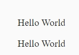
說明
先在html檔中加入兩個<p>標籤，先不寫內容，然後在ngOnInit中來動能生成Hello World，利用Angular的@ViewChild來取得主要的標籤 let ps = d3.select(this.d3body.nativeElement)
.sellAll("p")這是D3中的選擇集，從字面上的意思就是先選擇#d3body的這個標鑯，然後在選擇所有的<p>標，所以let ps中的ps代表在#d3body下面的兩個所有的標籤
p.text("Hello World")，這是為所有<p>標籤上加上文字，所以就顯示了兩個Hello World
可以修改一下來顯示不同的文本顯示
1 2 3 4 5 6 7 8 9 10 <div #d3body > <p > </p > <p > </p > <div > <span > </span > </div > <div > <span > </span > </div > </div >
1 2 3 4 5 6 7 8 9 10 11 12 13 14 15 16 17 18 19 20 21 22 23 import { Component, OnInit, ViewChild, ElementRef } from '@angular/core' ;import * as d3 from 'd3' ;@Component ({ selector: 'app-ch01-hello-world' , templateUrl: './ch01-hello-world.component.html' , styleUrls: ['./ch01-hello-world.component.scss' ] }) export class Ch01HelloWorldComponent implements OnInit { @ViewChild ('d3body' , { static : true }) private d3body: ElementRef; constructor ( ngOnInit() { let ps = d3.select(this .d3body.nativeElement) .selectAll('p' ); ps.text('Hello World' ); let spans = d3.select(this .d3body.nativeElement) .selectAll("span" ); spans.text("http://d3js.org" ); } }
第二個選擇元素和綁定數據 先來建立測試元件
1 ng g component pages/Ch02SelBind --module pages\dashboard\dashboard.module.ts
在D3.js中，選擇元素和綁定元素是基本的內容，也是很重要的內容，這些D3.js都程都是在選擇元素和綁定元素的基礎上展開後續工作的。
選擇元素
在D3.js中，選擇元素的函數有兩個
d3.select()d3.selectAll()
這兩個函數返品的就是選擇集
常見的用法如下：
1 2 3 4 let body = d3.select(this .d3body.nativeElement);let svg = body.select("svg" );let p = body.seleceAll("p" );let p1 = body.select("p" );
2.綁定數據
D3.js能將數據綁定到DOM上，也就是綁定到文檔上。例如，如果網頁有一個P元素和一各整數5，我們就將數掾5和P綁定在一起，綁定之律， 當需要依靠這個數據才操作某元素的時候，使用起來會很方便
D3.js中綁定數據的兩個函數
data()講一個數組綁定到選擇集上，數組各項和選擇集各元素綁定，也就是–對應的關系datum()將一個數據綁定到所有選擇集上
相比較而言，data()較常用
datum的使用
在src\app\pages\ch02-sel-bind\ch02-sel-bind.component.html
1 2 3 4 5 6 <div > datum的使用</div > <div #d3body > <p > dog</p > <p > cat</p > <p > pig</p > </div >
在src\app\pages\ch02-sel-bind\ch02-sel-bind.component.ts
1 2 3 4 5 6 7 8 9 10 11 12 13 14 15 16 17 18 19 20 21 22 import { Component, OnInit, ViewChild, ElementRef } from '@angular/core' ;import * as d3 from 'd3' ;@Component ({ selector: 'app-ch02-sel-bind' , templateUrl: './ch02-sel-bind.component.html' , styleUrls: ['./ch02-sel-bind.component.scss' ] }) export class Ch02SelBindComponent implements OnInit { @ViewChild ('d3body' , { static : true }) private d3body: ElementRef; constructor ( ngOnInit() { let str = "is an animal" ; let ps = d3.select(this .d3body.nativeElement) .selectAll("p" ); ps.datum(str) .text((d, i ) => { return `第${i} 個元素 ${d} ` ; }); } }
運行結果
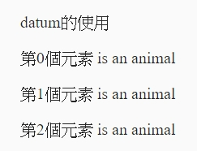
可以發現，本段代作用是將str這個字符串綁定在三個<p>選擇集上，然後通過一個暱名函數(d,i)=>{}訪問到綁定的元素。(d,i)=>{}這樣的函數後面會經常出現，其中的d代表數據，也就是與某元素綁定的數據，i代表索引，代表數據的索引，從0開始。
data()的使用
在src\app\pages\ch02-sel-bind\ch02-sel-bind.component.html
1 2 3 4 5 6 7 8 9 10 11 12 13 <div > datum的使用</div > <div #d3body > <p > dog</p > <p > cat</p > <p > pig</p > </div > <hr > <div > data的使用</div > <div #d3body1 > <p > dog</p > <p > cat</p > <p > pig</p > </div >
在src\app\pages\ch02-sel-bind\ch02-sel-bind.component.ts
1 2 3 4 5 6 7 8 9 10 11 12 13 14 15 16 17 18 19 20 21 22 23 24 25 26 27 28 29 30 31 import { Component, OnInit, ViewChild, ElementRef } from '@angular/core' ;import * as d3 from 'd3' ;@Component ({ selector: 'app-ch02-sel-bind' , templateUrl: './ch02-sel-bind.component.html' , styleUrls: ['./ch02-sel-bind.component.scss' ] }) export class Ch02SelBindComponent implements OnInit { @ViewChild ('d3body' , { static : true }) private d3body: ElementRef; @ViewChild ('d3body1' , { static : true }) private d3body1: ElementRef; constructor ( ngOnInit() { let str = "is an animal" ; let ps = d3.select(this .d3body.nativeElement) .selectAll("p" ); ps.datum(str) .text((d, i ) => { return `第${i} 個元素 ${d} ` ; }); let dataset = ["so cute" , "cute" , "fat" ]; let ps1 = d3.select(this .d3body1.nativeElement) .selectAll("p" ); ps1.data(dataset) .text((d, i ) => { return `第${i} 個動物+${d} ` ; }); } }
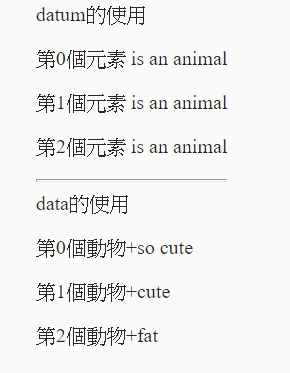
其實和datum()的體一樣，只不過現在是數組元素和選擇集有著對應關系
第三個理解Update，Enter，Exit 先來建立測試元件
1 ng g component pages/Ch03UEEdata --module pages\dashboard\dashboard.module.ts
Update、Enter、Exit是D3.js中很重要的概念，下面來講一下它們到底是什麼？
在使用data()時，例如現在我們有一個數組[3,6,9,12,15]，我們可以將數組每一項與一個<p>綁定，但是，現在就有一個問題–數據集個數和選擇集個數不匹配怎麼辦？這樣就需要理解Update、Enter、Exit
例子一：update和enter:數組[3,6,9,12,15]綁定到三個<p>上。可以想象到，數組的最後兩個元素沒有可以綁定的元素，這時D3會建立兩個空的元素與數組最後的兩個數據來相對，那麼這部分稱為Enter。而有元素與數據對應的部就稱為Update
例子二：exit：如果數組[3]綁到三個<p>上，可以想𡩀，最後兩個<p>沒有可綁定的數據，那麼沒有數據綁定的部分就稱為Exit如下圖
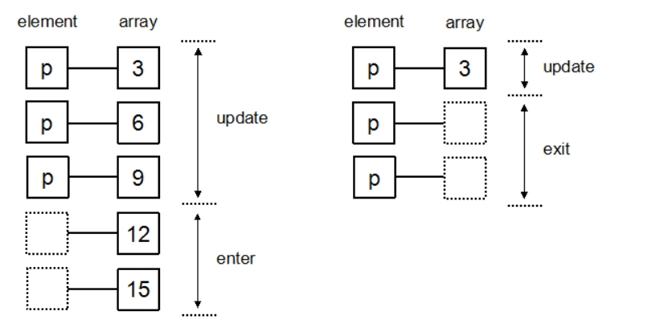
Update與Enter的使用
在src\app\pages\ch03-ueedata\ch03-ueedata.component.html
1 2 3 4 5 6 <div > Update與Enter的使用</div > <div #d3body > <p > dog</p > <p > cat</p > <p > pig</p > </div >
在src\app\pages\ch03-ueedata\ch03-ueedata.component.ts
1 2 3 4 5 6 7 8 9 10 11 12 13 14 15 16 17 18 19 20 21 22 23 24 25 26 27 28 29 30 31 32 33 34 35 36 import { Component, OnInit, ViewChild, ElementRef } from '@angular/core' ;import * as d3 from 'd3' ;@Component ({ selector: 'app-ch03-ueedata' , templateUrl: './ch03-ueedata.component.html' , styleUrls: ['./ch03-ueedata.component.scss' ] }) export class Ch03UEEdataComponent implements OnInit { @ViewChild ('d3body' , { static : true }) private d3body: ElementRef; constructor ( ngOnInit() { this .UpdateEnter(); } UpdateEnter() { let dataset = [3 , 6 , 9 , 12 , 15 ]; let p = d3.select(this .d3body.nativeElement) .selectAll("p" ); let update = p.data(dataset); let enter = update.enter(); update.text((d, i ) => { return `update: ${d} ,index:${i} ` }); let pEnter = enter.append("p" ) pEnter.text((d, i ) => { return `enter: ${d} ,index:${i} ` }); } }
運行結果
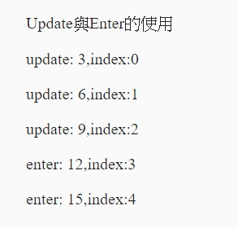
代碼說明：
1 2 3 4 5 6 let update = p.data(dataset) 表示綁定數掾，并得到update部分 let enter = update.enter() 表示得到enter部分 let pEnter = enter.append("p")//添加足夠多的<p> pEnter.text((d, i) => { return `enter: ${d},index:${i}` });//添加足夠多的<p>，并設罝文本
Update與Exit的使用
在src\app\pages\ch03-ueedata\ch03-ueedata.component.html
1 2 3 4 5 6 7 8 9 10 11 12 13 14 <div > Update與Enter的使用</div > <div #d3body > <p > dog</p > <p > cat</p > <p > pig</p > </div > <hr > <div > Update與Exit的使用</div > <div #d3body1 > <p > dog</p > <p > cat</p > <p > pig</p > <p > rat</p > </div >
在src\app\pages\ch03-ueedata\ch03-ueedata.component.ts
1 2 3 4 5 6 7 8 9 10 11 12 13 14 15 16 17 18 19 20 21 22 23 24 25 26 27 28 29 30 31 32 33 34 35 36 37 38 39 import { Component, OnInit, ViewChild, ElementRef } from '@angular/core' ;import * as d3 from 'd3' ;@Component ({ selector: 'app-ch03-ueedata' , templateUrl: './ch03-ueedata.component.html' , styleUrls: ['./ch03-ueedata.component.scss' ] }) export class Ch03UEEdataComponent implements OnInit { @ViewChild ('d3body' , { static : true }) private d3body: ElementRef; @ViewChild ('d3body1' , { static : true }) private d3body1: ElementRef; constructor ( ngOnInit() { this .UpdateEnter(); this .UpdateExit(); } UpdateEnter() { } UpdateExit() { let dataset = [3 , 6 ]; let p = d3.select(this .d3body1.nativeElement) .selectAll("p" ); let update = p.data(dataset); let exit = update.exit(); update.text((d, i ) => { return `update: ${d} ,index:${i} ` ; }); exit.text((d, i ) => { return `exit` ; }); } }
運行結果：
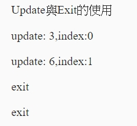
代碼說明：
這里需要說明是：在得到exit部分後，不需要使用append("xx")來添加元素，而enter需要，這樣得容易理解，還有就是對於exit部分的處理通常是刪除exit.remove()
第四個選擇、插入、刪除元素 先麼建立測試元件
1 ng g component pages/Ch04Elmsid --module pages\dashboard\dashboard.module.ts
選擇元素
現在我們已經知道，d3.js中選擇元素的函數有select()和selectAll()，下面來詳細講解一下假設我們的<div #d3body>中有三個<p>如下
1 2 3 4 5 <div #d3body > <p > dog</p > <p > cat</p > <p > pig</p > </div >
選擇第一個元素 <p>
1 2 3 4 5 ngOnInit() { let p = d3.select(this .d3body.nativeElement) .select("p" ); p.style("color" , "red" ); }
運行結果
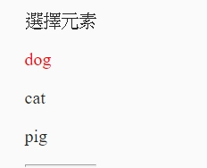
代碼說明：
let p = d3.select(this.d3body.nativeElement)𡖄Angular裏選到父的節點
.select("p");注意這里用的是select(“p”)而不是selectAll
p.style("color","red");這里是為text添加樣式，設置顏色為紅色
選擇全部元素
1 2 3 4 5 private selectall() { let p = d3.select(this .d3body1.nativeElement) .selectAll("p" ); p.style("color" , "red" ); }
運行結果
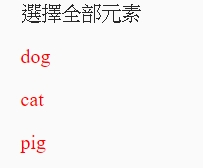
選擇任意元素
這需要改一下元性的屬性，如下
1 2 3 4 5 6 7 8 <div > 選擇任意元素</div > <div #d3body2 > <p > dog</p > <p class ="myp2" > cat</p > <p id ="myp3" > pig</p > <p #myp4 > rat</p > </div > <hr >
注意這里更改了兩個<p>的屬性，第二個<p>加了class 屬性，訪問時使用.myP2（前面加點）, 第三個``
加了id屬性，訪問時使用#myP3`（前面加＃），下面演示
1 2 3 4 5 6 7 private selectbyId() { let body = d3.select(this .d3body2.nativeElement); let p2 = body.select(".myp2" ); p2.style("color" , "red" ); let p3 = body.select("#myp3" ); p3.style("color" , "green" ); }
運行結果
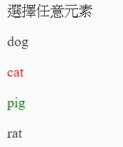
代碼說明：
這里也就是根據元素的屬性–class屬性來選擇特定的元素，（id屬性用法類似）
選擇任意元素（擴展）
利用function(d,i)來選擇特定元素，因為我們已經知道i在這里代表索引號，那麼可以𢥢用條件語句來選擇我們需要的元素
1 2 3 4 5 6 7 8 9 10 11 12 13 14 15 private selectbyIndex() { let dtatset = [3 , 6 , 9 , 12 ]; let body = d3.select(this .d3body3.nativeElement); let p = body.selectAll("p" ) .data(dtatset) .text((d, i, n ) => { if (i == 3 ) { let elm = n[i]; d3.select(elm).style("color" , "red" ) } return d; }); }
代碼說明：
在Angular中，可以來選擇以index來取得元素，來設定它的值
插入元素
D3.js中涉及兩種插入函數
append():在選擇集尾部插入元素
insert():在選擇集前面插入元素
appen()
1 2 3 4 5 6 7 8 <div > 使用append</div > <div #d3body4 > <p > dog</p > <p > cat</p > <p > pig</p > <p > rat</p > </div > <hr >
在程式
1 2 3 4 5 6 private useAppend() { let body = d3.select(this .d3body4.nativeElement); body.append("p" ) .text("another animal" ) .style("color" , "red" ); }
代碼說明：
在選擇d3body4這個元傃，然後在其內部的最後添加一個新的<p>
insert()
1 2 3 4 5 6 7 8 <div > 使用insert</div > <div #d3body5 > <p > dog</p > <p > cat</p > <p id ="myp3" > pig</p > <p > rat</p > </div > <hr >
程式碼
1 2 3 4 5 6 7 private userInsert() { let body = d3.select(this .d3body5.nativeElement); let p3 = body.insert("p" , "#myp3" ) .text("insert an animal" ) .style("color" , "red" ); } }
說明
body.insert("p", "#myp3")表示在屬性id為myp3的元素前面插入一個新的元素<p>
刪除元素
刪除元素很簡單，對於選擇的元素，使用remove(),即可
1 2 3 4 5 6 7 8 <div > 使用remove</div > <div #d3body6 > <p > dog</p > <p > cat</p > <p id ="myp3" > pig</p > <p > rat</p > </div > <hr >
在程式碼
1 2 3 4 5 private userRemove() { let body = d3.select(this .d3body6.nativeElement); body.select("#myp3" ) .remove(); }
說明：
這樣就是刪除了屬性id為myp3的元素
第五個做一個簡單的圖表 做一個簡單的圖表
為了做一個簡單的圖表，我們還是需要以下新的知識點
svg畫布：svg繪制的是向畫圖（還有canvas畫布，這個javaScript用來繪制2D圖像的，是位圖）
rect元素：是d3中在svg中繪制矩形的元素
g元素：分組的時候使用
有了這些知識點後，我們開始繪制
先來建立測試元件
1 ng g component pages/ch05Simplebar --module pages\dashboard\dashboard.module.ts
數據凖備
1 dataset = [250 , 210 , 170 , 130 , 90 ];
得到svg畫布，并創建分組
1 2 const svg = d3.select(this .svgRef.nativeElement);const g = svg.append("g" )
畫出距形
1 2 3 4 5 6 7 8 9 10 11 12 13 14 15 const rectHeight = 30 ; g.selectAll("rect" ) .data(this .dataset) .enter() .append("rect" ) .attr("x" , 20 ) .attr("y" , (d, i ) => { return i * rectHeight; }) .attr("width" , (d ) => { return d; }) .attr("height" , rectHeight - 5 ) .attr("fill" , "blue" ) ;
在html
1 2 3 <div #chart class ="wrapper" > <svg #svg class ="svg" > </svg > </div >
在scss
1 2 3 4 5 6 7 8 9 10 .wrapper { width : 100% ; height : 100% ; } .svg { margin-top : 60px ; margin-bottom : 60px ; margin-left :60px ; margin-right : 60px ; }
在ts
1 2 3 4 5 6 7 8 9 10 11 12 13 14 15 16 17 18 19 20 21 22 23 24 25 26 27 28 29 30 31 export class Ch05SimplebarComponent implements OnInit, AfterViewInit { @ViewChild ('chart' , { static : true }) private chartContainer: ElementRef; @ViewChild ('svg' , { static : true }) svgRef: ElementRef<SVGElement>; dataset = [250 , 210 , 170 , 130 , 90 ]; constructor ( ngOnInit() { } ngAfterViewInit(): void { const svg = d3.select(this .svgRef.nativeElement); const g = svg.append("g" ) const rectHeight = 30 ; g.selectAll("rect" ) .data(this .dataset) .enter() .append("rect" ) .attr("x" , 20 ) .attr("y" , (d, i ) => { return i * rectHeight; }) .attr("width" , (d ) => { return d; }) .attr("height" , rectHeight - 5 ) .attr("fill" , "blue" ) ; } }
運行結果
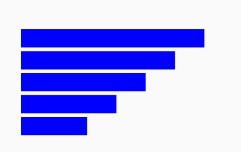
第六個比例尺的使用 先來建立測試元件
1 ng g component pages/Ch06Scale --module pages\dashboard\dashboard.module.ts
比例尺在D3.js中是一個很重要的東西，我們可以這樣理解D3.js中的比例尺–一種映射關系，從domain映射到range（為什麼是domain和range呢？等一下你就會看到，因為我們在建立比例尺常常會用到domain()和range()兩個函數，當然不是絕對的，D3中有很多類型的比例尺）
下面介紹在此範例中常用的兩種比例尺
線性比例尺
domain域和range域可以連續變化
在html
1 2 3 4 <div > 使用scaleLiner</div > <div #chartscale class ="wrapper" > </div > <hr >
在ts
1 2 3 4 5 6 7 8 9 10 11 12 private testScale() { const chart = d3.select(this .chartscale.nativeElement); const min = d3.min(this .dataset); const max = d3.max(this .dataset); const scaleLiner = d3.scaleLinear() .domain([min, max]) .range([0 , 300 ]) ; for (let i = 0 ; i < this .dataset.length; i++) { let svalue = this .dataset[i]; chart.append("p" ).text(`scaleLiner(${svalue} )輸出：${scaleLiner(svalue)} ` ); }
運行結果
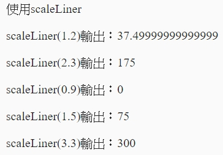
代碼諩明：
1 2 3 4 const scaleLiner = d3.scaleLinear() .domain([min, max]) .range([0 , 300 ]) ;
也就是[0.9,3.3]映射到[0,300]，所以scaleLinera(3.3)會輸出300
序數比例尺
domain域和range域是離散的，也就是數組
在html
1 2 3 4 <div > 序數比例尺</div > <div #chartscale1 class ="wrapper" > </div > <hr >
在ts
1 2 3 4 5 6 7 8 9 10 11 12 13 private testOrdinal() { const chart = d3.select(this .chartscale1.nativeElement); let index = ["0" , "1" , "2" , "3" , "4" ]; let color = ["red" , "blue" , "yellow" , "black" , "green" ]; const scaleOrdinal = d3.scaleOrdinal() .domain(index) .range(color) ; for (let i = 0 ; i < index.length; i++) { let svalue = index[i]; chart.append("p" ).text(`scaleOrdinal(${svalue} )輸出：${scaleOrdinal(svalue)} ` ); } }
代碼說明：
1 2 3 4 const scaleOrdinal = d3.scaleOrdinal() .domain(index) .range(color) ;
建立序數比例尺
利用比例尺來建立上一𣇛的柱狀圖
在html
1 2 3 4 5 <div > 柱狀圖以比例尺</div > <div #chartscale3 class ="wrapper" > <svg #svg class ="svg" > </svg > </div > <hr >
在ts
1 2 3 4 5 6 7 8 9 10 11 12 13 14 15 16 17 18 19 20 21 22 23 24 25 26 27 28 dataset = [2.5 , 2.1 , 1.7 , 1.3 , 0.9 ]; private testsampleBar() { const min = 0 ; const max = d3.max(this .dataset); const scaleLiner = d3.scaleLinear() .domain([min, max]) .range([0 , 300 ]) ; const svg = d3.select(this .svgRef.nativeElement); const g = svg.append("g" ) const rectHeight = 30 ; g.selectAll("rect" ) .data(this .dataset) .enter() .append("rect" ) .attr("x" , 20 ) .attr("y" , (d, i ) => { return i * rectHeight; }) .attr("width" , (d, i ) => { return scaleLiner(d); }) .attr("height" , rectHeight - 5 ) .attr("fill" , "blue" ) ; }
第七個坐標軸 D3中沒有現成的坐標軸圖形，需要我們自已用其他組件拼湊而成。D3中提供了坐標組件，使得我們在SVG中繪制一個坐標軸變得像添加一個普通元素那樣簡單
為了表繪制一個坐標軸，我們還是需要以下新的知識點
定義一個坐標軸
坐標𧥧是又朝向的， 在這里我們以向下朝向，水平方向的坐標軸為例，其他朝向的（比如向左朝向的，垂直的坐標軸）類似，這里是接著上一章來的，數據用的也是上一章的
先來建立測試元件
1 ng g component pages/Ch07Axis --module pages\dashboard\dashboard.module.ts
在html
1 2 3 4 5 <div > 繪制坐標軸</div > <div #chartscale class ="wrapper" > <svg #svg class ="svg" > </svg > </div > <hr >
在scss
1 2 3 4 5 6 7 8 9 10 11 12 .wrapper { width : 100% ; height : 100% ; } .svg { width : 100% ; height : 100% ; margin-top : 2px ; margin-bottom : 2px ; margin-left :2px ; margin-right : 2px ; }
在ts
1 2 3 4 5 6 7 8 9 10 11 12 13 private testAxis() { const xScale = d3.scaleLinear() .domain([0 , d3.max(this .dataset)]) .range([0 , 250 ]); const xAxis = d3.axisBottom(xScale) .ticks(7 ); const svg = d3.select(this .svgRef.nativeElement); const g = svg.append("g" ) g.attr("transform" , `translate(20,${this .dataset.length * this .rectHeight - this .rectHeight} )` ) .call(xAxis); }
代碼說明
1 2 const xAxis = d3.axisBottom(xScale)
g.call(xAxis)這里出現了一個新的函數，這也是這節的重點，我們知道xAxis是我們定義的一個坐標軸，其實它本身也是一個函數，所以這句話話的意思是將新建的分組<g>傳給xAxis()函數，用以繪制。
為柱狀圖添加坐標軸
我們知道怎麼繪制一個坐標軸了，現在為上一章繪制的柱狀圖加上一個坐標軸
在html
1 2 3 4 5 6 7 8 9 10 <div > 繪制坐標軸</div > <div #chartscale class ="wrapper" > <svg #svg class ="svg" > </svg > </div > <hr > <div > 繪制柱狀圖坐標軸</div > <div #chartscale2 class ="wrapper" > <svg #svg2 class ="svg" > </svg > </div > <hr >
在ts
1 2 3 4 5 6 7 8 9 10 11 12 13 14 15 16 17 18 19 20 21 22 23 24 25 26 27 28 29 30 31 32 33 34 35 36 private drawAxis() { const svg = d3.select(this .svgRef2.nativeElement); const marge = { top: 60 , bottom: 60 , left: 60 , right: 60 } svg.attr("width" , "960" ); svg.attr("height" , "600" ); const scaleLiner = d3.scaleLinear() .domain([0 , d3.max(this .dataset)]) .range([0 , 250 ]); let g = svg.append("g" ) g.attr("transform" , `translate(${marge.left} ,${marge.top} )` ); g.selectAll("rect" ) .data(this .dataset) .enter() .append("rect" ) .attr("x" , `${marge.left} ` ) .attr("y" , (d, i ) => { return i * this .rectHeight; }) .attr("width" , (d ) => { return scaleLiner(d); }) .attr("height" , this .rectHeight - 5 ) .attr("fill" , "blue" ); const xScale = d3.scaleLinear() .domain([0 , d3.max(this .dataset)]) .range([0 , 250 ]); const xAxis = d3.axisBottom(xScale) .ticks(7 ); g.append("g" ) .attr("transform" , `translate(${marge.left} ,${this .dataset.length * this .rectHeight} )` ) .call(xAxis); }
第八個完整的柱狀圖 先來建立測試元件
1 ng g component pages/Ch08BarChart --module pages\dashboard\dashboard.module.ts
一個完整的柱狀圖應該包括的元素有–矩形、文字、坐標軸，現在我們就來-繪制它們，這章是前面几章的綜合，這一章只有少量新的知識點，它們是
d3.scaleBand():這也是一個坐標軸，可以根據輸入的domain的長度，等分rangeRound域（類比range域）
d3.range():這個比較復雜，這里只講這個返回一個等差數列
設定SVG畫布
1 2 3 4 5 6 7 8 9 10 11 12 private drawChart() { const width = 960 ; const height = 600 const svg = d3.select(this .svgRef.nativeElement); svg.attr("width" , width); svg.attr("height" , height); const marge = { top: 60 , bottom: 60 , left: 60 , right: 60 }; let g = svg.append("g" ); g.attr("transform" , `translate(${marge.left} ,${marge.top} )` ); }
分別在x方向和y方向繪制坐標軸
1 2 3 4 5 6 7 8 9 10 11 12 13 14 15 16 17 18 19 20 private drawChart() { const yScale = d3.scaleLinear() .domain([d3.max(this .dataset), 0 ]) .range([0 , height - marge.top - marge.bottom]); const yAxis = d3.axisLeft(yScale); g.call(yAxis); g = svg.append("g" ); g.attr("transform" , `translate(${marge.left} ,${marge.top + yScale(0 )} )` ); const xScale = d3.scaleBand() .domain(d3.range(0 , this .dataset.length).map(String )) .rangeRound([0 , width - marge.left - marge.right]); const xAxis = d3.axisBottom(xScale); g.call(xAxis); }
繪級長條圖
1 2 3 4 5 6 7 8 9 10 11 12 13 14 15 16 17 18 19 20 21 22 23 24 25 26 27 28 29 30 private drawChart() { const rectPadding = 20 ; g = svg.append("g" ); g.attr("transform" , `translate(${marge.left} ,${marge.top} )` ); const gs = g.selectAll("rect" ) .data(this .dataset) .enter() .append("g" ); gs.append("rect" ) .attr("x" , (d: any , i: any ) => { return marge.left + xScale(i) - xScale.step() / 2 ; }) .attr("y" , (d: any , i ) => { return yScale(d); }) .attr("width" , () => return xScale.step() - rectPadding; }) .attr("height" , (d: any ) => { return height - marge.top - marge.bottom - yScale(d); }) .attr("fill" , "blue" ); }
繪制文字
1 2 3 4 5 6 7 8 9 10 11 12 13 14 15 16 17 18 19 private drawChart() { gs.append("text" ) .attr("x" , (d, i: any ) => { return marge.left + xScale(i) - xScale.step() / 2 ; }) .attr("y" , (d ) => { return yScale(d); }) .attr("dx" , () => console .log(xScale.step()); return (xScale.step() - rectPadding) / 2 ; }) .attr("dy" , "20" ) .text((d ) => { return d; }); }
運行結果如下
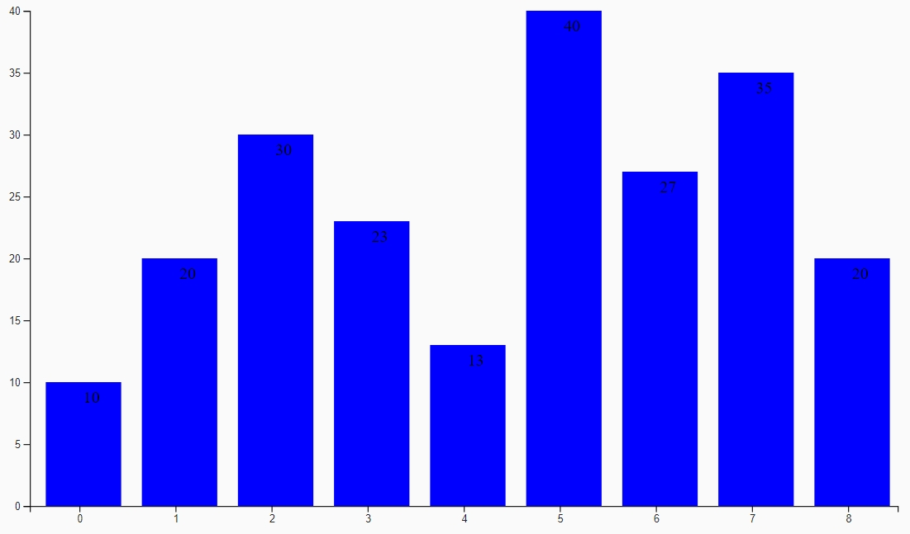
第九個讓圖表動起來 先來建立測試元件
1 ng g component pages/Ch09BarcharAni --module pages\dashboard\dashboard.module.ts
我們做一點有趣的事，—讓我們上一章繪制的圖表動起來。
為了讓圖表動起來，我們還是需要以下新的知識點
.attr(xxx).transition().attr(xxx)，transition()表示添加過渡，也就是以前一個屬性過渡到後一個屬性.duration(2000)，表示過渡過時間持續2秒.delay(500)，表示延遲0.4秒後再進行過渡.ease(d3.easeElasticInOut)表示過渡方式
有了上面的基礎知識後，現在我們來實現動態圖表
為矩形添加過渡效果
1 2 3 4 5 6 7 8 9 10 11 12 13 14 15 16 17 18 19 20 21 22 23 24 25 26 27 28 29 30 31 32 33 34 35 36 37 38 39 const rectPadding = 20 ; const g = svg.append("g" ); g.attr("transform" , `translate(${marge.left} ,${marge.top} )` ); const gs = g.selectAll("rect" ) .data(this .dataset) .enter() .append("g" ); gs.append("rect" ) .attr("x" , (d, i: any ) => { return marge.left + xScale(i) - xScale.step() / 2 ; }) .attr("y" , (d ) => { var min = yScale.domain()[0 ]; return yScale(min); }) .attr("width" , () => return xScale.step() - rectPadding; }) .attr("height" , (d ) => { return 0 ; }) .attr("fill" , "blue" ) .transition() .duration(2000 ) .delay((d, i ) => { return i * 300 ; }) .attr("y" , (d ) => { return yScale(d); }) .attr("height" , (d ) => { return height - marge.top - marge.bottom - yScale(d); }) ;
為文字添加過渡效果
1 2 3 4 5 6 7 8 9 10 11 12 13 14 15 16 17 18 19 20 21 22 23 24 25 26 gs.append("text" ) .attr("x" , (d, i: any ) => { return marge.left + xScale(i) - xScale.step() / 2 }) .attr("y" , (d ) => { let min = yScale.domain()[0 ]; return yScale(min); }) .attr("dx" , () => return (xScale.step() - rectPadding) / 2 ; }) .attr("dy" , "20" ) .text((d ) => { return d; }) .transition() .duration(2000 ) .delay((d, i ) => { return i * 400 ; }) .attr("y" , (d ) => { return yScale(d); });
第十個交互式操作 與圖形進行交互操作是很動要的！所謂交互操作也就是為圖形元素添加監聽事件，比麬說當你鼠標放在某個圖形元素上面的時候，就會顯示相應的文字，而當鼠標移開後，文字就消失，或者鼠標單擊一下某圖形元就會使它動起來。
為了與圖形元素進行交互操作，我們還是需要以下新的知識點
on("eventName",function);該函數是添加一個監聽事件，它的第一個參數是事件類型，第二個參數響應事件的內容d3.select(this)選擇當前元素
常見的事件類型
click：鼠標單擊某元素時觸發，相當於mousedown和moudeup的組合
mouseover：鼠標放在某元素上觸發
mouseout：鼠標移出某元素時觸發
mousemove：鼠標移動時觸發
mousedown：鼠標按鈕被按下時觸發
mouseup：鼠標按鈕被鬆開時觸發
dblclick：鼠標雙擊時觸發
可以參考官方api
先來產生測試元件
1 ng g component pages/Ch10Interactive --module pages\dashboard\dashboard.module.ts
基本上是參考上一章節的程式，將動畫的部分移除，有加入滑鼠事件，主要的部分
1 2 3 4 5 6 7 8 9 10 11 12 13 14 15 16 17 18 19 20 21 22 23 24 25 26 27 28 29 30 31 32 33 34 35 36 37 38 39 40 41 42 43 44 45 46 47 48 private drawChart() { const colors = d3.scaleLinear().domain([0 , this .dataset.length]).range(<any []>["red" , "yellow" ]); const rectPadding = 20 ; const g = svg.append("g" ); g.attr("transform" , `translate(${marge.left} ,${marge.left} )` ); const gs = g.selectAll("rect" ) .data(this .dataset) .enter() .append("g" ); gs.append("rect" ) .attr("x" , (d, i: any ) => { return marge.left + xScale(i) - xScale.step() / 2 }) .attr("y" , (d ) => { return yScale(d); }) .attr("width" , () => return xScale.step() - rectPadding; }) .attr("height" , (d ) => { return height - marge.top - marge.bottom - yScale(d); }) .attr("fill" , (d, i ) => colors(i)) .on("mouseover" , function ( const rect = d3.select(this ); rect .transition() .duration(300 ) .attr("fill" , "blue" ); }) .on("mouseout" , function (d, i ) const rect = d3.select(this ); rect .transition() .delay(300 ) .duration(300 ) .attr("fill" , colors(i)); }) ; }
第十一個餅狀圖 這一章我們來繪制一個簡單的餅狀圖，我們只繪制構成餅狀圖的元𤗣–扇形、文字，我也只是粗略的講解每個新知識點。
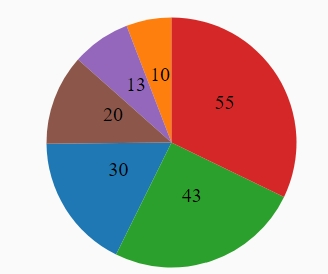
為了繪制一個餅狀圖，我們還是需要以下新的知識點
d3.pie()餅狀圖生成器，用以產生繪制一個弧的必須的數據的對象（利用原始數據產生新的數據），使用方式：d3.pie(data)
d3.arc().centroid()取用弧產生器的centroid函式回傳正中間的位置
d3.schemeCategory10，可以知道這代表一些離散色彩
先立建立測試元件
1 ng g component pages/Ch11PieChart --module pages\dashboard\dashboard.module.ts
主要程式
1 2 3 4 5 6 7 8 9 10 11 12 13 14 15 16 17 18 19 20 21 22 23 24 25 26 27 28 29 30 31 32 33 34 35 36 37 38 39 40 41 42 43 44 45 46 47 48 49 50 51 52 53 54 private drawChart() { const width = 860 ; const height = 500 ; const svg = d3.select(this .svgRef.nativeElement); svg.attr("width" , width); svg.attr("height" , height); const marge = { top: 60 , botton: 60 , left: 60 , right: 60 }; let center = { x: `${(width - marge.left - marge.right) / 2}`, y: `${(height - marge.top - marge.botton) / 2 } }; const g = svg.append("g" ); g.attr("transform" , `translate(${center.x} ,${center.y} )` ); const colorScale = d3.scaleOrdinal() .domain(d3.range(this .dataset.length).map(String )) .range(d3.schemeCategory10); const innerRadius = 0 ; const outerRadius = 100 ; const arc_generator = d3.arc() .innerRadius(innerRadius) .outerRadius(outerRadius); let pieData = d3.pie()(this .dataset); console .log(pieData); const gs = g.selectAll("path" ) .data(pieData) .enter(); gs.append("path" ) .attr("d" , (d: any ) => { return arc_generator(d); }) .attr("fill" , (d, i ) => { return colorScale(i); }); gs.append("text" ) .attr("transform" , (d: any ) => { return `translate(${arc_generator.centroid(d)} )` }) .attr("text-anchor" , "middle" ) .text((d: any ) => { return d.data; }) }
第十二個力導向圖(Force-Directed Graph) 什麼叫力導向圖，通俗一點就是有節點和線組成，當鼠標拖拉一個節點時，其它節點都會受到影響（力導向圖有多種類型）
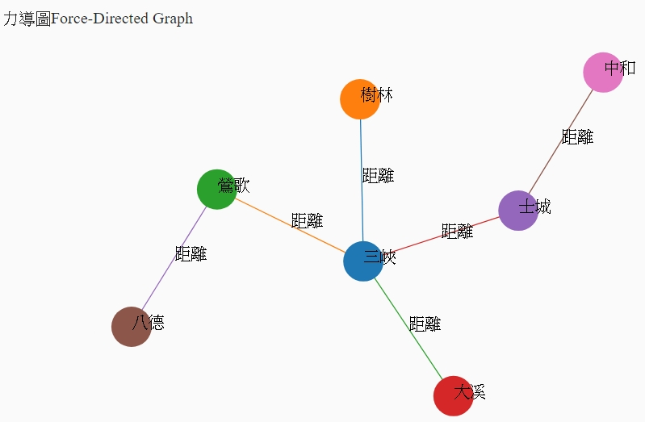
為了繪制一個力導向圖，我們還是需要以下新的知識點
d3.forceSimulation()新建一個力導向圖
d3.forceSimulation().force()𣵚加或移除一個力
1 2 3 4 var simulstion=d3.forceSimulation(nodes) .force("charge",d3.forceManyBody()) .force("link",d3.forceLink(links)) .force("center",d3.forceCenter());
這里說明一下對於d3.forceSimulation().force(name)，也就是當force中只有一個參數，這個參數是某個力的名稱，那麼這段代碼返回的是某個具體的力，例如d3.forceSimulation().force("link")，則返回的是d3.forceLink()這個力，這個用法會經常被用到
d3.forceSimulation().nodes輸入是一個數組，然後將這個輸入的數組進行一定的數據轉換，例如𣵚加坐標什麼的
d3.forceLinks.links()，這里輸入的也是一個數組（邊集），然後對輸入的邊集進行轉換，等一下我們會看到，它到底被轉換成什麼樣子的
tick函數，這個函數對於力導向導來說非常重要，因為力導向圖是不斷運動的，每一時刻都在發生更新，所以需要不斷更新節點和連線的位置
d3.drag()是力導向圖可以被拖動
建來建立測試元件
1 ng g component pages/Ch12ForceDirectedGraph --module pages\dashboard\dashboard.module.ts
主要程式碼
1 2 3 4 5 6 7 8 9 10 11 12 13 14 15 16 17 18 19 20 21 22 23 24 25 26 27 28 29 30 31 32 33 34 35 36 37 38 39 40 41 42 43 44 45 46 47 48 49 50 51 52 53 54 55 56 57 58 59 60 61 62 63 64 65 66 67 68 69 70 71 72 73 74 75 76 77 78 79 80 81 82 83 84 85 86 87 88 89 90 91 92 93 94 95 96 97 98 99 100 101 102 103 104 105 106 107 108 109 110 111 112 113 114 115 116 117 118 119 120 121 122 123 124 125 126 127 128 129 130 131 132 133 134 135 136 137 138 139 140 141 142 143 144 145 146 147 148 149 150 151 152 153 154 155 156 157 158 159 160 161 162 163 164 165 166 drawChart() { const width = 860 ; const height = 500 ; const svg = d3.select(this .svgRef.nativeElement); svg.attr("width" , width); svg.attr("height" , height); const marge = { top: 60 , botton: 60 , left: 60 , right: 60 }; let center = { x: `${(width - marge.left - marge.right) / 2}`, y: `${(height - marge.top - marge.botton) / 2 } }; const g = svg.append("g" ); g.attr("transform" , `translate(${center.x} ,${center.y} )` ); let nodes = [ { index: 0 , name: "三峽" }, { index: 1 , name: "樹林" }, { index: 2 , name: "鶯歌" }, { index: 3 , name: "大溪" }, { index: 4 , name: "士城" }, { index: 5 , name: "八德" }, { index: 6 , name: "中和" }, ]; let edges = [ { source: 0 , target: 1 , relation: "距離" , value: 1 }, { source: 0 , target: 2 , relation: "距離" , value: 1 }, { source: 0 , target: 3 , relation: "距離" , value: 1 }, { source: 0 , target: 4 , relation: "距離" , value: 1 }, { source: 2 , target: 5 , relation: "距離" , value: 1 }, { source: 4 , target: 6 , relation: "距離" , value: 1 }, ]; const colorScale = d3.scaleOrdinal<number , string >() .domain(d3.range(nodes.length)) .range(d3.schemeCategory10); const forceSimulation = d3.forceSimulation() .force("link" , d3.forceLink()) .force("charge" , d3.forceManyBody()) .force("center" , d3.forceCenter()); forceSimulation.nodes(nodes) .on("tick" , ticked); forceSimulation.force("link" , d3.forceLink(edges) .distance((d ) => { return d.value * 100 ; })); forceSimulation.force("center" , d3.forceCenter(0 , 0 )); console .log(nodes); console .log(edges); let links = g.append("g" ) .selectAll("line" ) .data(edges) .enter() .append("line" ) .attr("stroke" , (d, i ) => { return colorScale(i); }) .attr("stroke-width" , 1 ); let linksText = g.append("g" ) .selectAll("text" ) .data(edges) .enter() .append("text" ) .text((d ) => { return d.relation; }); let gsnode = g.append("g" ) .attr('class' , 'nodes' ) .selectAll("g" ) .data(nodes) .enter() .append("g" ); let circles = gsnode.append("circle" ) .attr("r" , 20 ) .attr("fill" , (d, i ) => { return colorScale(i); }) .call(d3.drag() .on("start" , dragstarted) .on("drag" , dragged) .on("end" , dragended) ); let lables = gsnode.append("text" ) .attr('x' , 0 ) .attr('y' , 0 ) .text((d ) => { return d.name; }); gsnode.append("title" ) .text(function (d ) return d.name; }); function dragstarted (d ) if (!d3.event.active) { forceSimulation.alphaTarget(0.8 ).restart(); } d.fx = d.x; d.fy = d.y; } function dragged (d ) d.fx = d3.event.x; d.fy = d3.event.y; } function dragended (d ) if (!d3.event.active) { forceSimulation.alphaTarget(0 ); } d.fx = null ; d.fy = null ; } function ticked ( links .attr("x1" , function (d: any ) return d.source.x; }) .attr("y1" , function (d: any ) return d.source.y; }) .attr("x2" , function (d: any ) return d.target.x; }) .attr("y2" , function (d: any ) return d.target.y; }); linksText .attr("x" , function (d: any ) return (d.source.x + d.target.x) / 2 ; }) .attr("y" , function (d: any ) return (d.source.y + d.target.y) / 2 ; }); gsnode .attr("transform" , function (d: any ) return "translate(" + d.x + "," + d.y + ")" ; }); } }
參考資料
D3.js v4/v5 force simulation 最小構成 – サンプル
angular-d3v4-force-graph
第十三個樹狀圖 我們利用貝茲曲線（Bézier curve）作為繪制一個完整的樹狀圖，包括節點、邊、文字，在這里我們會用到一個曲線生成器-貝茲曲線生成器，很像在繪制餅狀圖的成候就用到了一個弧形生成器，這兩個有類似的地方，但是還是避免不了引入新的知識點。
為了繪制一個樹狀圖，我們還是需要以下新的知識點
d3.hierarchy()層級布局，需要和tree生成器一起使用，來得到繪制樹所需要的節點數據和邊數據d3.hierarchy().sum()後序遍歷。雖然對於繪制一個基本的樹狀圖用不到這個函數d3.tree().separation()定義鄰居節點的距離。d3.descendants()得到所有的節點，已經經過轉換的數據node.links()得到所有的邊，已經經過轉換的數據d3.linkHorizontal()創建一個貝茲生成曲線生成器，當然不止只有水平的，還有垂直的（d3.linkVertical()）。還有最後一個新的知識點就是往linkHorizontal()生成器中傳入參數，這個參數有格式要求，等到這部分在詊細講解
生來建立測試元件
1 ng g component pages/Ch13TreeGraph --module pages\dashboard\dashboard.module.ts
主要程式碼
1 2 3 4 5 6 7 8 9 10 11 12 13 14 15 16 17 18 19 20 21 22 23 24 25 26 27 28 29 30 31 32 33 34 35 36 37 38 39 40 41 42 43 44 45 46 47 48 49 50 51 52 53 54 55 56 57 58 59 60 61 62 63 64 65 66 67 68 69 70 71 72 73 74 75 76 77 78 79 80 81 82 83 84 85 86 87 88 89 90 91 92 93 94 95 96 97 98 99 100 101 102 103 104 105 106 107 108 109 110 111 112 113 114 115 116 117 drawChart() { const width = 860 ; const height = 500 ; const svg = d3.select(this .svgRef.nativeElement); svg.attr("width" , width); svg.attr("height" , height); const marge = { top: 60 , bottom: 60 , left: 60 , right: 60 }; let center = { x: `${(width - marge.left - marge.right) / 2}`, y: `${(height - marge.top - marge.bottom) / 2 } }; const dataset = { name: "台灣" , children: [ { name: "台北市" , children: [ { name: "大安區" }, { name: "大直區" } ] }, { name: "新北市" , children: [ { name: "三峽區" , children: [ { name: "龍恩里" } ] } ] }, { name: "桃園市" , } ] } const hierarchyData = d3.hierarchy(dataset) .sum((d: any ) => { return d.children; }); let treewidth = 600 - (marge.left + marge.right); let treeHeight = 380 - (marge.top + marge.bottom); console .log(`treewidth=${treewidth} ,treeHeight=${treeHeight} ` ); const tree = d3.tree() .size([treewidth, treeHeight]) .separation((a, b ) => { return (a.parent == b.parent ? 1 : 2 ) / a.depth; }) const treeData = tree(hierarchyData); const nodes = treeData.descendants(); const links = treeData.links(); console .log(nodes); console .log(links); const g = svg.append("g" ); g.attr("transform" , `translate(${marge.left} ,${0 } )` ); g.append("g" ) .selectAll("path" ) .data(links) .enter() .append("path" ) .attr("d" , d3.linkHorizontal<any , any >() .x(d => .y(d => ) .attr("fill" , "none" ) .attr("stroke" , "yellow" ) .attr("stroke-width" , 3 ); const gs = g.append("g" ) .selectAll("g" ) .data(nodes) .enter() .append("g" ) .attr("transform" , (d: any ) => { let cx = d.x; let cy = d.y; return `translate(${cy} ,${cx} )` ; }); gs.append("circle" ) .attr("r" , 6 ) .attr("fill" , "white" ) .attr("stroke" , "blue" ) .attr("stroke-width" , 1 ); gs.append("text" ) .attr("x" , (d: any ) => { return d.children ? -40 : 8 ; }) .attr("y" , -5 ) .attr("dy" , 10 ) .text((d: any ) => { return d.data.name; }); }
主要問題在產生貝茲曲線在型別的轉換
1 2 3 4 .attr("d" , d3.linkHorizontal<any , any >() .x(d => .y(d => )
第十四個TopoJSON D3.js 支援 GeoJSON 的地圖格式，它是一種將地圖以點、線、多邊形包裝而成的 JSON 資料格式。由於在 GeoJSON 中各個行政區塊是各別描述的，重疊的邊界會讓檔案變得比較大，所以出現了另一種格式 TopoJSON ，它把共用的邊集合在一起，再用這些邊組成地理區塊，可以省下將近 80% 的檔案大小。
先來建立測試元件
1 ng g component pages/Ch14TopoJSON --module pages\dashboard\dashboard.module.ts
在anuglar要呼叫，可以在angular.json中的scripts將上面安裝好的元件加入
1 2 3 "scripts": [ "./node_modules/topojson/dist/topojson.min.js" ]
在使用上
1 declare let topojson: any ;
在畫立體世界地圖
1 2 3 4 5 6 7 8 9 10 11 12 13 14 15 16 17 18 19 20 21 22 23 24 25 26 27 28 29 30 31 32 33 34 35 36 37 38 39 40 41 42 43 44 45 46 47 48 49 50 51 52 drawChart() { const width = 860 ; const height = 600 ; const svg = d3.select(this .svgRef.nativeElement); svg.attr("width" , width); svg.attr("height" , height); let colors = d3.scaleOrdinal(d3.schemeCategory10); let projection = d3 .geoOrthographic() .scale(245 ) .translate([width / 2 , height / 2 ]) .clipAngle(90 ); let pathRenderer = d3.geoPath().projection(projection); let url = "https://gist.githubusercontent.com/ttom921/7c030c3ff7165f6d83478a82930c5957/raw/07e73f3c2d21558489604a0bc434b3a5cf41a867/world-110m.json" ; d3.json(url).then((data ) => { let countries = topojson.feature(data, data.objects.countries).features; const g = svg.append("g" ); g.selectAll("path" ) .data(countries) .enter() .append("path" ) .attr("d" , pathRenderer) .attr("fill" , (d: any ) => colors(d.id)); d3.select("g" ).call( d3.drag() .subject(() => let r = projection.rotate(); return { x: r[0 ], y: -r[1 ] }; }) .on("drag" , function ( let r = projection.rotate(); projection.rotate([d3.event.x, -d3.event.y, r[2 ]]); d3.select("g" ).selectAll("path" ).attr("d" , pathRenderer); }) ); }); }
在畫平面的世界地圖
1 2 3 4 5 6 7 8 9 10 11 12 13 14 15 16 17 18 19 20 21 22 23 24 25 26 27 28 29 30 31 32 33 34 35 36 37 38 39 40 41 42 43 44 45 46 drawFlatChart() { const width = 860 ; const height = 500 ; const svg = d3.select(this .svgRef1.nativeElement); svg.attr("width" , width); svg.attr("height" , height); let colors = d3.scaleOrdinal(d3.schemeCategory10); let url = "https://gist.githubusercontent.com/ttom921/7c030c3ff7165f6d83478a82930c5957/raw/07e73f3c2d21558489604a0bc434b3a5cf41a867/world-110m.json" ; d3.json(url).then((data ) => { let projection = d3 .geoMercator() .center([0 , 0 ]) .scale(100 ) .rotate([10 , 0 ]) ; let pathRenderer = d3.geoPath(); pathRenderer.projection(projection); let countries = topojson.feature(data, data.objects.countries).features; const g = svg.append("g" ); g.selectAll("path" ) .data(countries) .enter() .append("path" ) .attr("d" , pathRenderer) .attr("fill" , (d: any ) => colors(d.id)) ; }); }
參考資料 D3.js 實戰 － 地表最速地球儀實作
How to include ts-topojson into Angular2 app?
第十五個TaiwanTopJSON 來顯示一下，台灣的地圖
先麼建立一下測試元件
1 ng g component pages/Ch15Ch15TaiwanTopoJson --module pages\dashboard\dashboard.module.ts
有多加了tooltip
在src\app\pages\ch15-taiwan-topo-json\ch15-taiwan-topo-json.component.html
1 2 3 4 5 <div > 畫台灣地圖</div > <div #chartscale class ="wrapper" > <svg #svg class ="svg" > </svg > <div class ="tooltip" > </div > </div >
在src\app\pages\ch15-taiwan-topo-json\ch15-taiwan-topo-json.component.scss
1 2 3 4 5 6 7 8 9 10 11 12 13 14 15 16 17 18 19 20 21 22 23 24 25 .wrapper { width : 100% ; height : 100% ; } .svg { margin-top : 2px ; margin-bottom : 2px ; margin-left : 2px ; margin-right : 2px ; } .hidden { display : none; } div .tooltip { position : absolute; text-align : center; width : 80px ; height : 60px ; padding : 2px ; font : 12px sans-serif; background : #fff ; border : 0px ; pointer-events : none; }
在src\app\pages\ch15-taiwan-topo-json\ch15-taiwan-topo-json.component.ts
1 2 3 4 5 6 7 8 9 10 11 12 13 14 15 16 17 18 19 20 21 22 23 24 25 26 27 28 29 30 31 32 33 34 35 36 37 38 39 40 41 42 43 44 45 46 47 48 49 50 51 52 53 54 55 56 57 58 59 60 61 62 63 64 65 66 67 68 69 70 71 72 73 74 75 76 77 78 79 80 81 82 83 84 85 86 87 88 89 90 91 92 93 94 95 96 97 98 99 100 101 102 103 104 105 106 107 108 109 110 111 112 113 114 115 116 import * as d3 from 'd3' ;declare let topojson: any ;export class Ch15TaiwanTopoJsonComponent implements OnInit { @ViewChild ('svg' , { static : true }) svgRef: ElementRef<SVGElement>; density = { "臺北市" : 9952.60 , "嘉義市" : 4512.66 , "新竹市" : 4151.27 , "基隆市" : 2809.27 , "新北市" : 1932.91 , "桃園市" : 1692.09 , "臺中市" : 1229.62 , "彰化縣" : 1201.65 , "高雄市" : 942.97 , "臺南市" : 860.02 , "金門縣" : 847.16 , "澎湖縣" : 802.83 , "雲林縣" : 545.57 , "連江縣" : 435.21 , "新竹縣" : 376.86 , "苗栗縣" : 311.49 , "屏東縣" : 305.03 , "嘉義縣" : 275.18 , "宜蘭縣" : 213.89 , "南投縣" : 125.10 , "花蓮縣" : 71.96 , "臺東縣" : 63.75 }; constructor ( ngOnInit() { this .drawChart(); } drawChart() { const width = 860 ; const height = 600 ; const svg = d3.select(this .svgRef.nativeElement); svg.attr("width" , width); svg.attr("height" , height); svg.attr("viewBox" , `0 0 ${width} ${height} ` ); svg.attr("preserveAspectRatio" , `xMidYMid` ); let projection = d3 .geoMercator() .center([121 , 24 ]) .scale(6000 ) ; let pathRenderer = d3.geoPath().projection(projection); var tooltip = d3.select("div.tooltip" ); console .log(tooltip); let url = "https://gist.githubusercontent.com/ttom921/67dc5cd1c73052d7d0a241e6a721810d/raw/498a2ca876065001c20e4ede4a4de95b1fe5e6ec/taiwanTopoJSON" ; d3.json(url).then((data ) => { let features = topojson.feature(data, data.objects["COUNTY_MOI_1081121" ]).features; console .log(features); for (let idx = features.length - 1 ; idx >= 0 ; idx--) { features[idx].density = this .density[features[idx].properties.COUNTYNAME]; } let colors = d3.scaleLinear().domain([0 , 10000 ]).range(<any []>["#090" , "#f00" ]) const g = svg.append("g" ); g.selectAll("path" ) .data(features) .enter() .append("path" ) .attr("d" , pathRenderer) .attr("fill" , (d: any ) => colors(d.density)) .on("mouseover" , function (d: any ) let html = ` <p>${d.properties.COUNTYNAME} </p> <p>${d.density} </p> ` ; tooltip.style("hidden" , false ).html(html); }) .on("mousemove" , function (d: any ) let html = ` <p>${d.properties.COUNTYNAME} </p> <p>${d.density} </p> ` ; tooltip.classed("hidden" , false ) .style("top" , (d3.event.pageY) + "px" ) .style("left" , (d3.event.pageX + 10 ) + "px" ) .html(html); }) .on("mouseout" , function ( tooltip.classed("hidden" , true ); }) ; }); } }
參考資料 World Map with Tooltip Country Name v4
D3有遇到的坑 在設置一個顏色比例尺，為了讓不同的扇形呈不同的顏色會遇到類型轉換問題可參考
有問題的
1 2 3 4 5 6 7 8 const colorScalestr = d3.scaleOrdinal() .domain(d3.range(this .dataset.length).map((d ) => d + "" )) .range(d3.schemeCategory10); .attr("fill" , (d, i ) => { return colorScalestr(i); });
解決方式，宣告d3.scaleOrdinal<number, string>()
1 2 3 4 5 6 7 const colorScale = d3.scaleOrdinal<number , string >() .domain(d3.range(this .dataset.length)) .range(d3.schemeCategory10); .attr("fill" , (d, i ) => { return colorScale(i); });
D3 常用顏色類型 D3 v4.x / v5.x 常用顏色套用方式：
1 2 3 4 5 6 var color = d3.scaleOrdinal(d3.schemeCategory10); svg.append("rect" ) .attr("x" , 5 ).attr("y" , 5 ) .attr("width" , 50 ).attr("height" , 50 ) .style("fill" , color(3 ));
D3 v3.x 與 v4.x / v5.x 的常用顏色等效類型對應：
d3.scale.category10 → d3.schemeCategory10
d3.scale.category20 → d3.schemeCategory20
d3.scale.category20b → d3.schemeCategory20b
d3.scale.category20c → d3.schemeCategory20c
測試NavSub元件 這是為了有在側邊框有多層的選單的元件
先來安裝模組
1 npm install --save @angular/flex-layout@8.0.0-beta.27
參考stackblitz
建立元件
1 ng g component _common/MenuListItem
建立服務
1 ng g service _common/menu-list-item/Nav --flat
建立物件
1 ng g interface _common/NavItem
在src\app\_common\menu-list-item\nav-item.ts
1 2 3 4 5 6 7 export interface NavItem { displayName: string ; disabled?: boolean ; iconName: string ; route?: string ; children?: NavItem[]; }
在src\app\_common\menu-list-item\menu-list-item.component.scss
1 2 3 4 5 6 7 8 9 10 11 12 13 14 15 16 17 18 19 20 21 22 23 @import '../../theme' ;:host{ display: flex; flex-direction: column; outline: none; width: 100 %; .mat-list-item.active{ background-color: mat-color($app-primary,50 ); } &:hover,&focus { >.mat-list-item:not(.expanded){ background-color: mat-color($app-primary,100 ) !important; } } .mat-list-item{ padding:2 px 0 ; display:flex; width:auto; .routeIcon{ margin-right: 20 px; } } }
在src\app\_common\menu-list-item\menu-list-item.component.html
1 2 3 4 5 6 7 8 9 10 11 12 13 14 15 <a mat-list-item [ngStyle ]="{'padding-left': (depth * 6) + 'px'}" (click )="onItemSelected(item)" [ngClass ]="{'active': item.route ? router.isActive(item.route, true): false, 'expanded': expanded}" class ="menu-list-item" > <mat-icon class ="routeIcon" > {{item.iconName}}</mat-icon > {{item.displayName}} <span fxFlex *ngIf ="item.children && item.children.length" > <span fxFlex > </span > <mat-icon [@indicatorRotate ]="expanded ? 'expanded': 'collapsed'" > expand_more </mat-icon > </span > </a > <div *ngIf ="expanded" > <app-menu-list-item *ngFor ="let child of item.children" [item ]="child" [depth ]="depth+1" > </app-menu-list-item > </div >
在src\app\_common\menu-list-item\menu-list-item.component.ts
1 2 3 4 5 6 7 8 9 10 11 12 13 14 15 16 17 18 19 20 21 22 23 24 25 26 27 28 29 30 31 32 33 34 35 36 37 38 39 40 41 42 43 44 45 46 47 48 49 50 51 52 53 54 55 import { Component, OnInit, HostBinding, Input, Output, EventEmitter } from '@angular/core' ;import { trigger, state, transition, animate, style } from '@angular/animations' ;import { NavItem } from './nav-item' ;import { NavService } from './nav.service' ;import { Router } from '@angular/router' ;@Component ({ selector: 'app-menu-list-item' , templateUrl: './menu-list-item.component.html' , styleUrls: ['./menu-list-item.component.scss' ], animations: [ trigger('indicatorRotate' , [ state('collapsed' , style({ transform: 'rotate(0deg' })), state('expanded' , style({ transform: 'rotate(180deg)' })), transition('expanded <=> collapsed' , animate('225ms cubic-bezier(0.4,0.0,0.2,1)' ) ) ]), ] }) export class MenuListItemComponent implements OnInit { expanded: boolean ; @HostBinding ('attr.aria-expanded' ) ariaExpanded = this .expanded; @Input () item: NavItem; @Input () depth: number ; constructor ( public navService: NavService, public router: Router ) { if (this .depth === undefined ) { this .depth = 0 ; } } ngOnInit() { this .navService.currentUrl.subscribe((url: string ) => { if (this .item.route && url) { this .expanded = url.indexOf(`/${this .item.route} ` ) === 0 ; this .ariaExpanded = this .expanded; } }); } onItemSelected(item: NavItem) { if (!item.children || !item.children.length) { this .router.navigate([item.route]); this .navService.coloseNav(); } if (item.children && item.children.length) { this .expanded = !this .expanded; } } }
在src\app\_common\menu-list-item\nav.service.ts
1 2 3 4 5 6 7 8 9 10 11 12 13 14 15 16 17 18 19 20 21 22 23 import { Injectable } from '@angular/core' ;import { BehaviorSubject } from 'rxjs' ;import { Event, Router, NavigationEnd } from '@angular/router' ;@Injectable ({ providedIn: 'root' }) export class NavService { public appDrawer: any ; public currentUrl = new BehaviorSubject<string >(undefined ); constructor (private router: Router this .router.events.subscribe((event: Event ) => { if (event instanceof NavigationEnd) { this .currentUrl.next(event.urlAfterRedirects); } }); } public coloseNav() { this .appDrawer.handleClicked(null ); } }
在使用上的方法
在src\app\pages\dashboard\sidebar\sidebar.component.html
1 2 3 4 5 6 7 8 9 10 11 12 13 14 15 <mat-nav-list style ="margin-top: 64px;" color ="primary" > <mat-list-item [routerLink ]="['/','dashboard','ch06']" (click )="handleClicked($event)" > <mat-icon md-list-icon > email</mat-icon > 第06章比例尺使用 <mat-icon matSuffix class ="SufficIcon" > keyboard_arrow_right</mat-icon > </mat-list-item > <mat-divider > </mat-divider > <mat-nav-list > <app-menu-list-item *ngFor ="let item of navItems" [item ]="item" > </app-menu-list-item > </mat-nav-list > </mat-nav-list >
在src\app\pages\dashboard\sidebar\sidebar.component.ts
1 2 3 4 5 6 7 8 9 10 11 12 13 14 15 16 17 18 19 20 21 22 23 24 25 26 27 28 29 30 31 32 33 34 export class SidebarComponent implements OnInit { @Output () navClicked = new EventEmitter<void >(); navItems: NavItem[] = [ { displayName: '車輛' , iconName: 'recent_actors' , route: 'dashboard' , children: [ { displayName: '車輛管理' , iconName: 'star_rate' , route: 'dashboard/ch01' , }, { displayName: '車隊管理' , iconName: 'person' , route: 'dashboard/ch02' , } ] } ]; constructor (private navService: NavService ngOnInit() { this .navService.appDrawer = this ; } handleClicked(ev: Event) { if (!isNullOrUndefined(ev)) ev.preventDefault(); this .navClicked.emit(); } }
主要是設定有多少的導航的item，和它們的IconName和路徑，注意路徑需要完整的，然後在this.navService指向自已
建立基本測試TestD3 1 ng g component _common/TestD3
讓我們先用瑣碎問答法來看一看D3.js
D3.js是什麼？
是一套Javascript函式庫，包含一整組操縱畫圖很好用的輔助的工具，還有很方便的資料操作模型
為什麼要用D3.js而不用其它像是chart.js、hightchart.js、amchart.js?
各有優缺點，D3.js的優點是彈性超大但實作繁瑣，其它圖表則是容易建立但形式侷限。
需要先先學其它東西嗎？
一定得會：Javascript、HTML
強烈建議：CSS、SVG
那麼開始吧！ 這樣講你可能不相信，其實D3.js的基礎不是在視覺化，而是資料與物件的結合。「資料」-例如各個嬰兒死亡率-逐一結合至「物件」-比方說一個長條、一個圖形。下圖為死亡率資料結合至圓形物件上的表現：
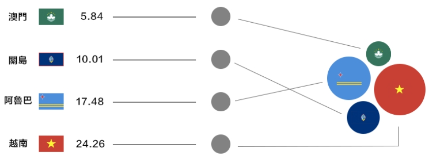
在上圖中，左邊其有四筆資料，各包含國名、國旗與死亡率；我們先利用D3.js將𫍇些資料紿合偌中間的圓形物件；接著再次透過D3.js使用資料來替物件設定參數。比方說死亡率對應到半䀴，國旗則用來為圓形著色，可以得到右邊的泡泡圖。
上面這一段話大概就是D3.js運作的基本原理囉！
實戰時間 使用D3.js，請先引入D3.js的程式碼，我們在上面已有安裝過了
接著就可以開始囉！假設我們想要將剛剛的死亡率資料畫成長條圖，資料如下：
1 var death_rate =[['越南' ,24.26 ],['阿魯色' ,'17.48' ],['關島' ,'10.01' ],['澳門' ,'5.84' ] ]
D3.js的第一步就是選取物件。使用d3.select函式，因為我們是要畫在元件裏面不是在跟根目錄下，所以我們需要使用ng上的功能來取得元件上的根節點
1 2 3 4 @ViewChild ('texschart' , { static : true }) private testContainer: ElementRef;var body = this .testContainer.nativeElement;var root = d3.select(body);
他會傳回一個代表root的物件，如果有有用過jQuery的話，這效果類似$(“body”)，你也可以連環執行，取得部分文件中的標籤物件：
1 2 var span = d3.select("body" ).select("h3" ).select("span" ); console .log(span);
取得的物件，D3.js也替你包裝得很方便使用。比方說我們可以用text函式變標籤的內文、或者用style函式設定標籤的樣式：
1 span.text("hello world" ).style("font-size" , "24px" );
上面的例子取得的只有一個物件，但是做資料連結時，根據資料數量的不同，可能會需要很多個物件，這時我們可以改用de.selectAll函式，並在呼叫selectAll之前利用select確認這些物件所屬的位置:
1 2 3 var body = this .testContainer.nativeElement;var div = d3.select(body).selectAll('div' );console .log(div);
接著就是這次的重頭戲-資料連結囉！使用data函式更可以做到：
1 2 3 var body = this .chartContainer.nativeElement;var death_rate = [['越南' , 24.26 ], ['阿魯巴' , 17.48 ], ['關島' , 10.01 ], ['澳門' , 5.84 ]];const div_data_bind = d3.select(body).selectAll('div' ).data(death_rate);
你可能會想，資料的數量又不一定難道我得先在HTML裡寫好一堆
標籤來讓資料連結嗎？事實上D3.js提供了兩個函式-
enter跟
exit-幫我們過濾出「沒有物件可配對的資料」與「沒有資料可配對的物件」這兩個集合，方便我們緊接著利用另外兩個輔助函式「append」與「remove」來處理數量不符的情況：
1 2 3 const div_data_bind = d3.select(body).selectAll('div' ).data(death_rate);let div_set = div_data_bind.enter().append('div' );div_data_bind.exit().remove();
如程式碼所見，append幫我們建立標籤給資料配對，而remove則移除多餘的標籤。
物件/資料連結完成以後，我們就可以開始設定物件的參數。這陆有D3.js的另一個要點：「設定參數時可以代入函式，參數的值會用函式執行的結果來設定」。 而傳入的函式的參數則會是各筆資料d與資料的順序i。比方說，我們利用國名跟資料順序來填標籤的內容：
1 2 3 div_set.text((d, i ) => { return i + " /" + d[0 ] });
則你會在網頁上看這樣的結果：
1 2 3 4 0 /越南 1 /阿魯巴 2 /關島 3 /澳門
以下程式碼和html如下
在src\app\_common\test-d3\test-d3.component.html
在src\app\_common\test-d3\test-d3.component.ts
1 2 3 4 5 6 7 8 9 10 11 12 13 14 15 export class TestD3Component implements OnInit, AfterViewInit { @ViewChild ('chart' , { static : true }) private chartContainer: ElementRef; ngAfterViewInit(): void { var body = this .chartContainer.nativeElement; var death_rate = [['越南' , 24.26 ], ['阿魯巴' , 17.48 ], ['關島' , 10.01 ], ['澳門' , 5.84 ]]; const div_data_bind = d3.select(body).selectAll('div' ).data(death_rate); let div_set = div_data_bind.enter().append('div' ); div_data_bind.exit().remove(); div_set.text((d, i ) => { return i + " /" + d[0 ] }); } }
到這裡，大致上已了解D3.js的基礎了。
我要圖表啦 都學到一半了，怎麼還沒看到圖表？其實現在我們已經具備製作圖表的能力了。把剛剛的
標籤想成是長條，我們只要設定寬度、高度與背影顏冥就可以做到囉：
1 2 3 4 5 6 7 8 let div_set = div_data_bind.enter().append('div' );div_set.style("height" , "20px" ); div_set.style("background" , "red" ); div_set.style("margin" , "4px" ); div_set.style("width" , (d, i ) => { return (d[1 ] * 10 ) + "px" ; }); div_data_bind.exit().remove();
在上面的程式碼片段中，我們將長條高度設為20px,背影設為紅色，預留4px的間距，並將寬度設定為死亡率的10倍，其值會介於20～240px之間。
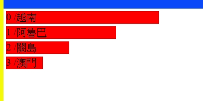
這就是我們的第一個視覺化作品！
可是接下來呢？ 以上是介紹的是D3.js的核心部份-data bingind，D3.js仍有另一個強力的地方-豐富的繪圖輔助函式庫，協助我們繪制圖餅、地理區塊、計算地圖投影、顏色與座標內差轉換、各種圖表配置的計算工具等等。就算不使用D3.js的data binding，那些也是非常有用的工具。
另外D3.js若搭配SVG，透過繪製任意形狀可以有更多變化可以玩，所以SVG也是很值得一學的技術！其實不光只是SVG，只要會產生物件模型的東西例如MathML，X3DDOM，等等的，通過可以利用D3.js玩得很愉快。
建立測試BarChart 1 ng g component _common/TestBarChart
在src\app\_common\test-bar-chart\test-bar-chart.component.html
1 2 3 4 <div #chart class ="wrapper" > <svg #svg > </svg > <div *ngIf ="loading" class ="loader" > Loading</div > </div >
在src\app\_common\test-bar-chart\test-bar-chart.component.scss
1 2 3 4 5 6 7 8 9 10 11 12 13 14 15 16 17 .wrapper { width : 100% ; height : 100% ; } .loader { position : absolute; display : flex; justify-content : center; align-items : center; top : 0 ; right : 0 ; bottom : 0 ; left : 0 ; background : white; opacity : 1 ; }
在src\app\_common\test-bar-chart\test-bar-chart.component.ts
1 2 3 4 5 6 7 8 9 10 11 12 13 14 15 16 17 18 19 20 21 22 23 24 25 26 27 28 29 30 31 32 33 34 35 36 37 38 39 40 41 42 43 44 45 46 47 48 49 50 51 52 53 54 55 56 57 58 59 60 61 62 63 64 65 66 67 68 69 70 71 72 73 74 75 76 77 78 79 80 81 82 83 84 85 86 87 88 89 90 91 92 93 94 95 96 97 98 99 100 101 102 103 104 105 106 107 108 109 110 111 112 113 114 115 116 117 118 119 120 121 122 123 124 125 126 127 128 129 130 131 132 import { Component, OnInit, ElementRef, ViewChild, AfterViewInit, ViewEncapsulation } from '@angular/core' ;import * as d3 from 'd3' ;import { fromEvent } from 'rxjs' ;import { tap, debounceTime } from 'rxjs/operators' ;@Component ({ selector: 'app-test-bar-chart' , templateUrl: './test-bar-chart.component.html' , styleUrls: ['./test-bar-chart.component.scss' ], encapsulation: ViewEncapsulation.None }) export class TestBarChartComponent implements OnInit, AfterViewInit { @ViewChild ('chart' , { static : true }) private chartContainer: ElementRef; @ViewChild ('svg' , { static : true }) svgRef: ElementRef<SVGElement>; loading = false ; private svg: any ; private width: number ; private height: number ; private margin = { top: 8 , right: 10 , bottom: 32 , left: 20 }; private viewboxWidth = 800 ; private viewboxHeight = 100 ; constructor ( ngOnInit() { } ngAfterViewInit(): void { this .svg = d3.select(this .svgRef.nativeElement); this .drawChart(); } private calWidthHeightMargin() { const { width, height } = this .chartContainer.nativeElement.getBoundingClientRect(); this .width = width; this .height = height; } private initSvg(visiable = false ) { let svg = this .svg; svg .attr("width" , this .width) .attr("height" , this .height) .attr('viewBox' , `0 0 ${this .viewboxWidth} ${this .viewboxHeight} ` ) .attr('preserveAspectRatio' , 'xMinYMid meet' ) ; svg.selectAll('g' ).remove(); fromEvent(window , 'resize' ) .pipe( tap(() =>this .loading = true ), debounceTime(300 ) ) .subscribe(() => this .drawChart(); this .loading = false ; }); if (visiable == false ) return ; svg.append('g' ).append('rect' ) .style('fill' , 'purple' ) .style('fill-opacity' , 0.1 ) .style('stroke' , 'purple' ) .style('stroke-width' , 4 ) .attr('width' , this .width) .attr('height' , this .height); } drawChart() { this .calWidthHeightMargin(); this .initSvg(true ); let svg = this .svg; var dataset = [5 , 2 , 9 , 4 , 5 , 6 , 7 ]; const colors = d3.scaleLinear().domain([0 , dataset.length]).range(<any []>['red' , 'blue' ]); const n = dataset.length; const maxValue = d3.max(dataset); var xScale = d3.scaleLinear() .domain([0 , dataset.length - 1 ]) .range([0 , this .viewboxWidth]); const xAxis = d3.axisBottom(xScale).ticks(dataset.length - 1 ).tickSize(10 ).tickPadding(10 ).tickFormat((d: any , i: any ) => i); svg.append('g' ) .attr('class' , 'x axis' ) .attr('transform' , `translate(${this .margin.left} , ${this .viewboxHeight - this .margin.bottom} )` ) .call(xAxis); const subheight = this .margin.top + this .margin.bottom; var yScale = d3.scaleLinear() .domain([0 , maxValue]) .range([0 , this .viewboxHeight - subheight]); var yScale2 = d3.scaleLinear() .domain([0 , maxValue]) .range([this .viewboxHeight - subheight, 0 ]); const yAxis = d3.axisLeft(yScale2).ticks(Math .min(Math .floor(this .viewboxHeight / 50 ), maxValue)); svg.append('g' ) .attr('class' , 'y axis' ) .attr('transform' , `translate(${this .margin.left} , ${this .margin.top} )` ) .call(yAxis); var bars = svg.append('g' ) .attr('class' , 'bars' ); bars.selectAll('rect' ) .data(dataset) .enter() .append('rect' ) .style('fill' , (d, i ) => colors(i)) .attr('x' , (d, i ) => xScale(i) + this .margin.left / 2 ) .attr('y' , (d ) => this .viewboxHeight - this .margin.bottom - yScale(d)) .attr('width' , 20 ) .attr('height' , (d, i ) => { return yScale(d); }); } }
基本的流程大概如下
graph TD;
ngAfterViewInit --> 選到svg標籤
選到svg標籤 --> 畫圖表drawChart
畫drawChart --> 計算寬高calWidthHeightMargin
計算寬高calWidthHeightMargin --> 初始svg_initSvg
接下來計算X軸的比例和顯示
1 2 3 4 5 6 7 8 9 10 11 12 13 var xScale = d3.scaleLinear() .domain([0 , dataset.length - 1 ]) .range([0 , this .viewboxWidth]); const xAxis = d3.axisBottom(xScale).ticks(dataset.length - 1 ).tickSize(10 ).tickPadding(10 ).tickFormat((d: any , i: any ) => i); svg.append('g' ) .attr('class' , 'x axis' ) .attr('transform' , `translate(${this .margin.left} , ${this .viewboxHeight - this .margin.bottom} )` ) .call(xAxis);
托下來計算Y軸的比例和顯示
1 2 3 4 5 6 7 8 9 10 11 12 13 14 const subheight = this .margin.top + this .margin.bottom; var yScale = d3.scaleLinear() .domain([0 , maxValue]) .range([0 , this .viewboxHeight - subheight]); var yScale2 = d3.scaleLinear() .domain([0 , maxValue]) .range([this .viewboxHeight - subheight, 0 ]); const yAxis = d3.axisLeft(yScale2).ticks(Math .min(Math .floor(this .viewboxHeight / 50 ), maxValue)); svg.append('g' ) .attr('class' , 'y axis' ) .attr('transform' , `translate(${this .margin.left} , ${this .margin.top} )` ) .call(yAxis);
顯示資料
1 2 3 4 5 6 7 8 9 10 11 12 13 14 15 16 var bars = svg.append('g' ) .attr('class' , 'bars' ); bars.selectAll('rect' ) .data(dataset) .enter() .append('rect' ) .style('fill' , (d, i ) => colors(i)) .attr('x' , (d, i ) => xScale(i) + this .margin.left / 2 ) .attr('y' , (d ) => this .viewboxHeight - this .margin.bottom - yScale(d)) .attr('width' , 20 ) .attr('height' , (d, i ) => { return yScale(d); });
注意 ：在使用viewbox的顯示時，如果parent的視窗小於viewbox的大小，如果使用meet的屬性，會超過顯示的大小
建立BarChart 1 ng g component _common/BarChart
在src\app\_common\bar-chart\bar-chart.component.html
1 2 3 4 <div #chart class ="wrapper" > <svg #svg > </svg > <div *ngIf ="loading" class ="loader" > Loading</div > </div >
在src\app\_common\bar-chart\bar-chart.component.scss
1 2 3 4 .wrapper { width : 100% ; height : 100% ; }
在src\app\_common\bar-chart\bar-chart.component.ts
1 2 3 4 5 6 7 8 9 10 11 12 13 14 15 16 17 18 19 20 21 22 23 24 25 26 27 28 29 30 31 32 33 34 35 36 37 38 39 40 41 42 43 44 45 46 47 48 49 50 51 52 53 54 55 56 57 58 59 60 61 62 63 64 65 66 67 68 69 70 71 72 73 74 75 76 77 78 79 80 81 82 83 84 85 86 87 88 89 90 91 92 93 94 95 96 97 98 99 100 101 102 103 104 105 106 107 108 109 110 111 112 113 114 115 116 117 118 119 120 121 122 123 124 125 import { Component, OnInit, ViewChild, ElementRef, AfterViewInit, Input, OnChanges } from '@angular/core' ;import { fromEvent } from 'rxjs' ;import { debounceTime, tap } from 'rxjs/operators' ;import * as d3 from 'd3' ;@Component ({ selector: 'app-bar-chart' , templateUrl: './bar-chart.component.html' , styleUrls: ['./bar-chart.component.scss' ] }) export class BarChartComponent implements OnInit, OnChanges, AfterViewInit { @ViewChild ('chart' , { static : true }) private chartContainer: ElementRef; @ViewChild ('svg' , { static : true }) svgRef: ElementRef<SVGElement>; loading = false ; @Input () dataset = []; private margin: number ; private width: number ; private height: number ; private chartWidth: number ; private chartHeight: number ; constructor ( this .margin = 20 ; } generaterTestData() { for (let i = 0 ; i < (8 ); i++) { this .dataset.push(Math .floor(Math .random() * 80 )); } } ngOnInit() { } ngOnChanges() { if (this .dataset) { const svg = d3.select(this .svgRef.nativeElement); if (svg != null ) { this .drawChart(svg); } } } ngAfterViewInit(): void { const svg = d3.select(this .svgRef.nativeElement); this .drawChart(svg); fromEvent(window , 'resize' ) .pipe( tap(() =>this .loading = true ), debounceTime(300 ) ) .subscribe(() => this .drawChart(svg); this .loading = false ; }); } private drawChart(svg: any ) { this .calWidthHeightMargin(); const maxValue = d3.max(this .dataset); const colors = d3.scaleLinear().domain([0 , this .dataset.length]).range(<any []>['red' , 'blue' ]); svg .attr('viewBox' , `0 0 ${this .width} ${this .height} ` ) .attr('preserveAspectRatio' , 'xMinYMin' ); svg.selectAll('g' ).remove(); var xScale = d3.scaleLinear() .domain([0 , this .dataset.length]) .range([0 , this .chartWidth]); svg.append('g' ) .attr('class' , 'x axis' ) .attr('transform' , `translate(${this .margin} , ${this .chartHeight + this .margin} )` ) .call(d3.axisBottom(xScale)); var yScale = d3.scaleLinear() .domain([0 , maxValue]) .range([0 , this .chartHeight]); var yScale2 = d3.scaleLinear() .domain([0 , maxValue]) .range([this .chartHeight, 0 ]); svg.append('g' ) .attr('class' , 'y axis' ) .attr('transform' , `translate(${this .margin} , ${this .margin} )` ) .call(d3.axisLeft(yScale2).ticks(Math .min(Math .floor(this .chartHeight / 20 ), maxValue))); var bars = svg.append('g' ) .attr('class' , 'bars' ); bars.selectAll('rect' ) .data(this .dataset) .enter() .append('rect' ) .style('fill' , (d, i ) => colors(i)) .attr('x' , (d, i ) => xScale(i) + this .margin) .attr('y' , (d ) => this .chartHeight + this .margin - yScale(d)) .attr('width' , 20 ) .attr('height' , (d, i ) => { return yScale(d); }); } private calWidthHeightMargin() { const { width, height } = this .chartContainer.nativeElement.getBoundingClientRect(); this .width = width; this .height = height; this .chartWidth = width - 2 * this .margin; this .chartHeight = height - 2 * this .margin; } }
建立LineChart 1 ng g component _common/01_line_chart/LineChart
在src\app\_common\01_line_chart\line-chart\line-chart.component.html
1 2 3 4 <div #chart class ="wrapper" > <svg #svg > </svg > <div *ngIf ="loading" class ="loader" > Loading</div > </div >
在src\app\_common\01_line_chart\line-chart\line-chart.component.scss
1 2 3 4 5 6 7 8 9 10 11 12 13 14 15 16 17 18 19 20 21 22 23 .wrapper { width : 100% ; height : 100% ; } .loader { position : relative; display : flex; justify-content : center; align-items : center; top : 0 ; right : 0 ; bottom : 0 ; left : 0 ; background : white; opacity : 1 ; } .axis-title { fill: none; stroke: rgb(238 , 67 , 15 ); stroke-width : 0.5px ; }
在src\app\_common\01_line_chart\line-chart\line-chart.component.ts
1 2 3 4 5 6 7 8 9 10 11 12 13 14 15 16 17 18 19 20 21 22 23 24 25 26 27 28 29 30 31 32 33 34 35 36 37 38 39 40 41 42 43 44 45 46 47 48 49 50 51 52 53 54 55 56 57 58 59 60 61 62 63 64 65 66 67 68 69 70 71 72 73 74 75 76 77 78 79 80 81 82 83 84 85 86 87 88 89 90 91 92 93 94 95 96 97 98 99 100 101 102 103 104 105 106 107 108 109 110 111 112 113 114 115 116 117 118 119 120 121 122 123 124 125 126 127 128 129 130 131 132 133 134 135 136 137 138 139 140 141 142 143 144 145 146 147 148 149 150 151 152 153 154 import { Component, OnInit, ElementRef, ViewChild, AfterViewInit, ViewEncapsulation } from '@angular/core' ;import * as d3 from 'd3' ;import { STOCKS } from 'src/app/share/data/stocks' ;import { fromEvent } from 'rxjs' ;import { tap, debounceTime } from 'rxjs/operators' ;@Component ({ selector: 'app-line-chart' , templateUrl: './line-chart.component.html' , styleUrls: ['./line-chart.component.scss' ], encapsulation: ViewEncapsulation.None, }) export class LineChartComponent implements OnInit, AfterViewInit { @ViewChild ('chart' , { static : true }) private chartContainer: ElementRef; @ViewChild ('svg' , { static : true }) svgRef: ElementRef<SVGElement>; loading = false ; dataset = []; private margin = { top: 20 , right: 40 , bottom: 20 , left: 20 }; width: number ; height: number ; chartWidth: number ; chartHeight: number ; chartLeftGap: number ; chartBottomGap: number ; constructor ( this .chartLeftGap = 20 ; this .chartBottomGap = 0 ; this .dataset = STOCKS; } ngOnInit() { } ngAfterViewInit(): void { const svg = d3.select(this .svgRef.nativeElement); this .drawChart(svg); fromEvent(window , 'resize' ) .pipe( tap(() =>this .loading = true ), debounceTime(300 ) ) .subscribe(() => this .drawChart(svg); this .loading = false ; }); } private drawChart(svg: any ) { this .calWidthHeightMargin(); this .initSvg(svg, false ); const xScale = this .initXAxis(svg); const yScale = this .initYAxis(svg); this .drawLine(svg, xScale, yScale); } drawLine(svg: any , xScale: any , yScale: any ) { const colors = d3.scaleLinear().domain([0 , this .dataset.length]).range(<any []>['red' , 'blue' ]); const line = d3.line() .x((d: any ) => xScale(d.date)) .y((d: any ) => (yScale(d.value))) ; svg.append('g' ) .attr('transform' , `translate(${this .margin.left + this .chartLeftGap} , ${this .margin.top} )` ) .append('path' ) .datum(STOCKS) .attr('fill' , 'none' ) .attr('stroke' , "red" ) .attr('stroke-width' , "red" ) .attr('class' , 'line' ) .attr('d' , line); } initYAxis(svg: any ) { const midheight = this .margin.top + this .margin.bottom; let yScale = d3.scaleLinear() .domain(d3.extent(STOCKS, (d ) => d.value)) .range([this .chartHeight - midheight, 0 ]); svg.append('g' ) .attr('class' , 'y axis' ) .attr('transform' , `translate(${this .margin.left + this .chartLeftGap} , ${this .margin.top - this .chartBottomGap} )` ) .call(d3.axisLeft(yScale)) .append('text' ) .attr('class' , 'axis-title' ) .attr('transform' , 'rotate(-90)' ) .attr('x' , 6 ) .attr('dy' , '.71em' ) .style('text-anchor' , 'end' ) .text('Price ($)' ); return yScale; } private initXAxis(svg: any ) { const midwidth = this .margin.left + this .margin.right; const minheight = this .margin.bottom + this .chartBottomGap; let xScale = d3.scaleTime() .domain(d3.extent(STOCKS, (d ) => d.date)) .range([0 , this .chartWidth - midwidth]); svg.append('g' ) .attr('class' , 'x axis' ) .attr('transform' , `translate(${this .margin.left + this .chartLeftGap} , ${this .chartHeight - minheight} )` ) .call(d3.axisBottom(xScale)) ; return xScale; } private initSvg(svg: any , visiable = false ) { svg .attr('width' , this .chartWidth) .attr('height' , this .chartHeight) .attr('transform' , `translate(${this .margin.left} , ${this .margin.top} )` ); svg.selectAll('g' ).remove(); if (visiable == false ) return ; svg.append('g' ).append('rect' ) .style('fill' , 'purple' ) .style('fill-opacity' , 0.1 ) .style('stroke' , 'purple' ) .style('stroke-width' , 10 ) .attr('width' , this .chartWidth) .attr('height' , this .chartHeight); } private calWidthHeightMargin() { const { width, height } = this .chartContainer.nativeElement.getBoundingClientRect(); this .width = width; this .height = height; this .chartWidth = width - this .margin.left - this .margin.right; this .chartHeight = height - this .margin.top - this .margin.bottom; } }
建立多線LineChart 1 ng g component _common/02_multi_series_line_chart/MultiSeries
在src\app\_common\02_multi_series_line_chart\multi-series\multi-series.component.html
1 2 3 4 <div #chart class ="wrapper" > <svg #svg > </svg > <div *ngIf ="loading" class ="loader" > Loading</div > </div >
在src\app\_common\02_multi_series_line_chart\multi-series\multi-series.component.scss
1 2 3 4 5 6 7 8 9 10 11 12 13 14 15 16 17 18 19 20 21 22 23 .wrapper { width : 100% ; height : 100% ; } .loader { position : relative; display : flex; justify-content : center; align-items : center; top : 0 ; right : 0 ; bottom : 0 ; left : 0 ; background : white; opacity : 1 ; } .axis-title { fill: none; stroke: rgb(238 , 67 , 15 ); stroke-width : 0.5px ; }
在src\app\_common\02_multi_series_line_chart\multi-series\multi-series.component.ts
1 2 3 4 5 6 7 8 9 10 11 12 13 14 15 16 17 18 19 20 21 22 23 24 25 26 27 28 29 30 31 32 33 34 35 36 37 38 39 40 41 42 43 44 45 46 47 48 49 50 51 52 53 54 55 56 57 58 59 60 61 62 63 64 65 66 67 68 69 70 71 72 73 74 75 76 77 78 79 80 81 82 83 84 85 86 87 88 89 90 91 92 93 94 95 96 97 98 99 100 101 102 103 104 105 106 107 108 109 110 111 112 113 114 115 116 117 118 119 120 121 122 123 124 125 126 127 128 129 130 131 132 133 134 135 136 137 138 139 140 141 142 143 144 145 146 147 148 149 150 151 152 153 154 155 156 157 158 159 160 161 162 163 164 165 166 167 168 169 170 171 172 173 174 175 176 177 178 179 180 181 182 183 184 185 186 187 188 189 190 191 192 193 194 195 import { Component, OnInit, ElementRef, ViewChild, AfterViewInit } from '@angular/core' ;import * as d3 from 'd3' ;import { TEMPERATURES } from 'src/app/share/data/temperatures' ;import { curveBasis } from 'd3' ;@Component ({ selector: 'app-multi-series' , templateUrl: './multi-series.component.html' , styleUrls: ['./multi-series.component.scss' ] }) export class MultiSeriesComponent implements OnInit, AfterViewInit { @ViewChild ('chart' , { static : true }) private chartContainer: ElementRef; @ViewChild ('svg' , { static : true }) svgRef: ElementRef<SVGElement>; loading = false ; dataset: any ; private margin = { top: 20 , right: 40 , bottom: 20 , left: 20 }; width: number ; height: number ; chartWidth: number ; chartHeight: number ; chartLeftGap: number ; chartBottomGap: number ; arydate: any ; constructor ( this .chartLeftGap = 20 ; this .chartBottomGap = 0 ; this .arydate = TEMPERATURES.map((v ) => v.values.map((v ) => v.date))[0 ]; this .dataset = TEMPERATURES; } ngOnInit() { } ngAfterViewInit(): void { const svg = d3.select(this .svgRef.nativeElement); this .drawChart(svg); } private drawChart(svg: any ) { this .calWidthHeightMargin(); this .initSvg(svg, true ); const xScale = this .initXAxis(svg); const yScale = this .initYAxis(svg); const zScale = this .initZAxis(svg); this .drawLine(svg, xScale, yScale, zScale); } drawLine(svg: any , xScale: d3.ScaleTime<number , number >, yScale: d3.ScaleLinear<number , number >, zScale: d3.ScaleOrdinal<string , string >) { const line = d3.line() .curve(d3.curveBasis) .x((d: any ) => xScale(d.date)) .y((d: any ) => (yScale(d.temperature))) ; const colors = ['steelblue' , 'orange' , 'red' ]; let g = svg.append('g' ); this .dataset.forEach((d, i ) => { g.attr('transform' , `translate(${this .margin.left + this .chartLeftGap} , ${this .margin.top} )` ) .append('path' ) .datum(d) .attr('fill' , 'none' ) .attr('stroke' , colors[i]) .attr('class' , 'line' ) .attr('d' , (d ) => line(d.values)) ; g.append('text' ) .datum(d) .attr('transform' , (d ) => `translate(${xScale(d.values[d.values.length - 1 ].date) - this .chartLeftGap * 2 } , ${yScale(d.values[d.values.length - 1 ].temperature)} )` ) .attr('x' , 3 ) .attr('dy' , '0.35em' ) .style('font' , '10px sans-serif' ) .text(function (d ) return d.id; }); }); } initZAxis(svg: any ) { let zScale = d3.scaleOrdinal(d3.schemeCategory10) .domain(TEMPERATURES.map(function (c ) return c.id; })) ; return zScale; } initYAxis(svg: any ) { const midheight = this .margin.top + this .margin.bottom; let yScale = d3.scaleLinear() .domain([ d3.min(TEMPERATURES, function (c ) return d3.min(c.values, function (d ) return d.temperature; }); }), d3.max(TEMPERATURES, function (c ) return d3.max(c.values, function (d ) return d.temperature; }); }) ]) .range([this .chartHeight - midheight, 0 ]); svg.append('g' ) .attr('class' , 'y axis' ) .attr('transform' , `translate(${this .margin.left + this .chartLeftGap} , ${this .margin.top - this .chartBottomGap} )` ) .call(d3.axisLeft(yScale)) .append('text' ) .attr('class' , 'axis-title' ) .attr('transform' , 'rotate(-90)' ) .attr('x' , 6 ) .attr('dy' , '.71em' ) .style('text-anchor' , 'end' ) .text('Price ($)' ); return yScale; } private initXAxis(svg: any ) { const midwidth = this .margin.left + this .margin.right; const minheight = this .margin.bottom + this .chartBottomGap; let xScale = d3.scaleTime() .domain(d3.extent(this .arydate, (d: Date ) => d)) .range([0 , this .chartWidth - midwidth]); svg.append('g' ) .attr('class' , 'x axis' ) .attr('transform' , `translate(${this .margin.left + this .chartLeftGap} , ${this .chartHeight - minheight} )` ) .call(d3.axisBottom(xScale)) ; return xScale; } private initSvg(svg: any , visiable = false ) { svg .attr('width' , this .chartWidth) .attr('height' , this .chartHeight) .attr('transform' , `translate(${this .margin.left} , ${this .margin.top} )` ); svg.selectAll('g' ).remove(); if (visiable == false ) return ; svg.append('g' ).append('rect' ) .style('fill' , 'purple' ) .style('fill-opacity' , 0.1 ) .style('stroke' , 'purple' ) .style('stroke-width' , 10 ) .attr('width' , this .chartWidth) .attr('height' , this .chartHeight); } private calWidthHeightMargin() { const { width, height } = this .chartContainer.nativeElement.getBoundingClientRect(); this .width = width; this .height = height; this .chartWidth = width - this .margin.left - this .margin.right; this .chartHeight = height - this .margin.top - this .margin.bottom; } }
建立slidebar 1 ng g component _common/GsensorInfo
主要的羅輯
1 2 3 4 5 6 7 8 9 10 11 12 13 14 15 16 17 18 19 20 21 22 23 24 25 26 27 28 29 30 31 32 33 34 35 36 37 38 39 private drawSideBar(svg: any , xScaleClamp: any ) { let x2Scale = d3.scaleLinear().domain([0 , this .tSecond]).range([0 , this .chartWidth]).clamp(true ); var slider = svg.append("g" ) .attr("class" , "slider" ) .attr('transform' , `translate(${this .margin.left} , ${this .margin.top + this .chartheightGap * 4 } )` ) ; slider.append("line" ) .attr("class" , "track" ) .attr("x1" , xScaleClamp.range()[0 ]) .attr("x2" , xScaleClamp.range()[1 ]) .select(function (return this .parentNode.appendChild(this .cloneNode(true )); }) .attr("class" , "track-inset" ) .select(function (return this .parentNode.appendChild(this .cloneNode(true )); }) .attr("class" , "track-overlay" ) .call(d3.drag() .on("start drag" , this .startAndDragged()) ) ; const btncircle = slider.insert("circle" , ".track-overlay" ) .attr("class" , "handle" ) .attr("r" , 9 ); const btnline = slider.append("line" , ".track-overlay" ) .attr("class" , "trackbar" ) .attr("y1" , `${-this .chartheightGap * 4 + this .margin.top * 3 } ` ) .attr("y2" , `${-this .margin.top} ` ) .attr("x1" , 0 ) .attr("x2" , 0 ) .attr("stroke" , "#666" ) .attr("stroke-width" , "2px" ) }
複制元件 在D3.js上有可以複制它自已元件（ex line）的程式
1 2 3 4 5 6 slider.append("line" ) .attr("class" , "track" ) .attr("x1" , xScaleClamp.range()[0 ]) .attr("x2" , xScaleClamp.range()[1 ]) .select(function (return this .parentNode.appendChild(this .cloneNode(true )); })
事件呼叫 在事件呼叫上，我們可能需存取原來angular的屬性，例如start drag這是兩個事件 ，如下的程式片斷
1 2 3 4 5 6 7 8 9 10 11 12 13 14 15 16 17 18 private drawSideBar(svg: any , xScaleClamp: any ) { slider.append("line" ) .call(d3.drag() .on("start drag" , this .startAndDragged()) ) ; } private startAndDragged(): (d, i ) => void { return (d, i ) => { this .moveCircleLine(this .xScaleClamp.invert(d3.event.x)); } }
一些參數的設定 tick()設定刻度的數量
tickFormat()設定資料格式
tickSize()設定分隔線
參考資料 How to use ‘this’ in Angular with D3?
D3.js的v5版本入门教程（前篇）—— 关于
使用Angular在一个页面上创建多个D3可拖动/可缩放的树
charting
d3.js实现自定义多y轴折线图
D3.js with Angular Examples
初探 D3.js Multi Line Chart
Kuro.tw部落格
網頁視覺化利器 － D3.js 簡介
D3.js新手開發基本圖表
Angular D3.js